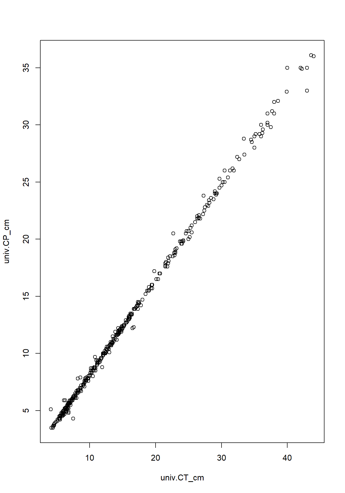
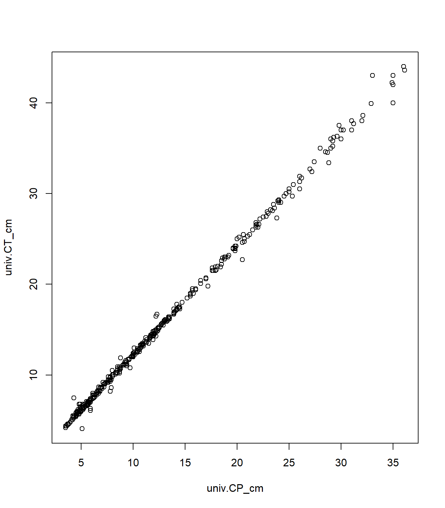
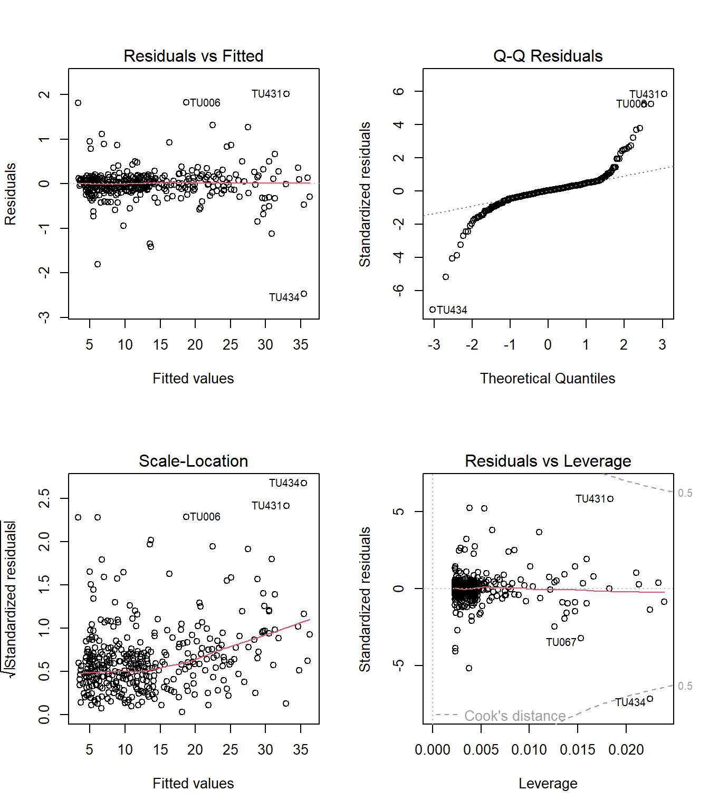

14 R Módulo 3.2 - Correlação e Regressão
RESUMO
A estatística descritiva tem um papel importante a desempenhar na ciência. Quando problemas específicos são tratados na ciência, os dados precisam ser coletados, analisados e apresentados de forma concisa para que outros possam se beneficiar do que foi encontrado.
Apresentação
A estatística descritiva tem um papel importante a desempenhar na ciência. Quando problemas específicos são tratados na ciência, os dados precisam ser coletados, analisados e apresentados de forma concisa para que outros possam se beneficiar do que foi encontrado. Geralmente não é possível apresentar um conjunto de dados completo em uma publicação ou em um seminário e, mesmo que fosse, é improvável isso permitisse uma boa comunicação dos resultados da pesquisa. Em vez disso, os dados são geralmente resumidos como tabelas de frequência, histogramas e estatísticas descritivas que os leitores ou ouvintes podem assimilar prontamente, mas que ainda transmitem os elementos essenciais do conjunto de dados original. O principal objetivo do cálculo das estatísticas descritivas é transmitir informações essenciais contidas em um conjunto de dados da forma mais concisa e clara possível.
14.1 Organização básica
dev.off() #apaga os graficos, se houver algum
rm(list=ls(all=TRUE)) #limpa a memória
cat("\014") #limpa o console Instalando os pacotes necessários para esse módulo
install.packages("openxlsx") #importa arquivos do excel14.2 Importando a planilha
ATENÇÃO
Os links para baixar as planilhas necessárias para repetir esse tutorial podem ser encontrados na seção Arquivos disponíveis do Capítulo Bases de dados.
Ou, baixe aqui o arquivo tucuna.xlsx
Vamos importar a planilha de dados univariados tucuna.xlsx. Note que o símbolo # em programação R significa que o texto que vem depois dele é um comentário e não será executado pelo programa. Isso é útil para explicar o código ou deixar anotações. Ajuste a segunda linha do código abaixo para refletir “C:/Seu/Diretório/De/Trabalho/Planilha.xlsx”.
library(openxlsx)
univ <- read.xlsx("D:/Elvio/OneDrive/Disciplinas/_EcoNumerica/5.Matrizes/tucuna.xlsx",
rowNames = T, colNames = T,
sheet = "tucuna")
head(univ, 10)
head(univ[, 1:5], 10)## CT_cm PT_g CP_cm Ctubo_cm PC_g p_PT Pest_g Cest_cm gr_est ir_est
## TU001 32.4 468.8 27.2 39.8 458.9 2.111775 3.9 7.7 I 0.8319113
## TU002 33.4 520.0 28.8 14.3 507.4 2.423077 5.9 10.0 I 1.1346154
## TU003 27.3 301.5 23.8 13.0 283.4 6.003317 15.5 10.2 III 5.1409619
## TU004 13.2 28.2 11.0 16.5 27.7 1.773050 0.3 4.3 I 1.0638298
## TU005 14.3 38.9 11.9 15.5 37.7 3.084833 0.8 4.5 III 2.0565553
## TU006 22.7 431.7 20.5 24.2 418.7 3.011350 9.9 6.4 III 2.2932592
## TU007 23.2 544.0 19.2 25.0 520.1 4.393382 6.8 7.5 II 1.2500000
## TU008 13.5 161.6 11.5 17.5 157.0 2.846535 4.1 6.8 II 2.5371287
## TU009 24.6 200.5 20.5 25.7 195.9 2.294264 2.5 7.6 II 1.2468828
## TU010 19.4 86.7 16.0 18.3 84.5 2.537486 0.7 5.1 I 0.8073818
## Pint_g Cint_cm gr_int ir_int Pgon_g Cgon_cm emg ig
## TU001 4.8 38.3 II 1.0238908 1.2 7 IMATURO 0.25597270
## TU002 5.3 13.3 II 1.0192308 1.4 6.5 MADURO 0.26923077
## TU003 2.4 12.0 II 0.7960199 0.2 7.7 EM MATURACAO 0.06633499
## TU004 0.1 16.0 II 0.3546099 0.1 5 IMATURO 0.35460993
## TU005 0.3 15.0 II 0.7712082 0.1 3.2 IMATURO 0.25706941
## TU006 2.7 23.7 II 0.6254343 0.4 7.8 EM MATURACAO 0.09265694
## TU007 3.3 24.5 II 0.6066176 13.8 7.9 MADURO 2.53676471
## TU008 0.4 17.0 I 0.2475248 0.1 2.5 IMATURO 0.06188119
## TU009 2.0 25.3 II 0.9975062 0.1 6.5 EM MATURACAO 0.04987531
## TU010 1.4 17.7 II 1.6147636 0.1 6 IMATURO 0.11534025
## mes periodo estação sexo
## TU001 ago chuvoso inverno MACHO
## TU002 ago chuvoso inverno MACHO
## TU003 ago chuvoso inverno MACHO
## TU004 ago chuvoso inverno MACHO
## TU005 ago chuvoso inverno MACHO
## TU006 set chuvoso inverno MACHO
## TU007 set chuvoso inverno FEMEA
## TU008 set chuvoso inverno imaturo
## TU009 set chuvoso inverno MACHO
## TU010 set chuvoso inverno MACHO
## CT_cm PT_g CP_cm Ctubo_cm PC_g
## TU001 32.4 468.8 27.2 39.8 458.9
## TU002 33.4 520.0 28.8 14.3 507.4
## TU003 27.3 301.5 23.8 13.0 283.4
## TU004 13.2 28.2 11.0 16.5 27.7
## TU005 14.3 38.9 11.9 15.5 37.7
## TU006 22.7 431.7 20.5 24.2 418.7
## TU007 23.2 544.0 19.2 25.0 520.1
## TU008 13.5 161.6 11.5 17.5 157.0
## TU009 24.6 200.5 20.5 25.7 195.9
## TU010 19.4 86.7 16.0 18.3 84.5Exibindo os dados importados (esses comando são “case-sensitive” ignore.case(object)).
14.3 Correlação
O coeficiente de correlação produto-momento de Pearson descreve a relação entre duas variáveis numéricas contínuas. A análise de correlação também pode ser aplicada entre variáveis categóricas binárias (coeficiente Phi) ou entre uma variável numérica contínua e uma variável categórica binária (correlação ponto-bisserial) (COAKES; STEED, 2001), porém essas abordagens não constituem o foco do presente texto.
Quando os pressupostos da correlação não podem ser adequadamente atendidos, utiliza-se uma alternativa não-paramétrica, a correlação de postos de Spearman.
Neste capítulo serão abordadas:
Correlação simples bivariada (coeficiente de correlação produto-momento de Pearson) Correlação de Spearman (bivariada não-paramétrica) Correlação parcial
A correlação bivariada simples, refere-se à correlação entre duas variáveis contínuas e é a medida mais comum de relação linear.
Esse coeficiente possui valores possíveis variando de:
-1 a +1,
onde o valor indica a força da relação, enquanto o sinal indica a direção da relação.
A correlação parcial fornece uma medida única de associação linear entre duas variáveis, ajustando os efeitos de uma ou mais variáveis adicionais.
14.3.0.1 Pressupostos
A análise de correlação possui vários pressupostos:
Pares relacionados: Os dados devem ser coletados em pares relacionados. Ou seja, se houver um escore na variável X, deve haver também um escore correspondente na variável Y para o mesmo participante.
Escala de medida: Os dados devem possuir natureza intervalar ou de razão.
Normalidade: Os escores de cada variável devem apresentar distribuição normal.
Linearidade: A relação entre as duas variáveis deve ser linear.
Homoscedasticidade: A variabilidade dos escores de uma variável deve ser aproximadamente a mesma em todos os valores da outra variável. Ou seja, refere-se à forma como os escores se distribuem uniformemente em torno da linha de regressão.
Os pressupostos 1 e 2 dependem do delineamento da pesquisa.
O pressuposto 3 pode ser avaliado utilizando os procedimentos descritos nos capítulos anteriores.
Os pressupostos 4 e 5 podem ser avaliados examinando gráficos de dispersão (scatterplots) das variáveis.
14.4 Correlação simples (bivariada)
No caso dos dados de dinâmica populacional do tucunaré (Cichla ocellaris), pode-se investigar a relação entre duas variáveis biométricas contínuas, como o comprimento padrão (CP_cm) e o comprimento total (CT_cm).
Suspeita-se que exista uma relação linear positiva entre essas variáveis, uma vez que indivíduos com maior comprimento padrão tendem também a apresentar maior comprimento total.
Assim, pode-se utilizar a correlação produto-momento de Pearson para responder à seguinte questão:
- Existe correlação significativa entre o comprimento padrão e o comprimento total dos indivíduos?
Nesse caso, utiliza-se:
df<-data.frame(univ$CT_cm, univ$CP_cm, univ$PT_g)
df
plot(df[,1:2])
# Teste de Pearson
cor(df, method="pearson")
cor.test(univ$CP_cm, univ$CT_cm,
method = "pearson")
# Teste de Spearman
cor(df[,1:2], method="spearman")
cor.test(univ$CT_cm, univ$CP_cm,
method="spearman")## univ.CT_cm univ.CP_cm univ.PT_g
## 1 32.4 27.2 468.8
## 2 33.4 28.8 520.0
## 3 27.3 23.8 301.5
## 4 13.2 11.0 28.2
## 5 14.3 11.9 38.9
## 6 22.7 20.5 431.7
## 7 23.2 19.2 544.0
## 8 13.5 11.5 161.6
## 9 24.6 20.5 200.5
## 10 19.4 16.0 86.7
## 11 25.5 21.2 206.7
## 12 23.0 18.9 153.0
## 13 17.4 14.4 68.7
## 14 16.5 12.2 53.6
## 15 21.9 18.4 141.1
## 16 28.1 23.4 299.3
## 17 27.2 22.2 253.6
## 18 25.5 20.6 226.0
## 19 38.0 32.0 437.1
## 20 27.5 22.8 299.8
## 21 7.8 6.2 4.5
## 22 6.6 5.1 2.1
## 23 7.8 6.1 4.0
## 24 8.3 6.6 5.5
## 25 8.6 6.8 6.7
## 26 6.3 5.9 2.5
## 27 8.0 6.1 4.9
## 28 10.9 8.5 13.5
## 29 7.1 5.5 3.3
## 30 9.8 7.8 10.0
## 31 6.0 4.6 2.1
## 32 6.1 5.9 2.0
## 33 6.2 4.9 1.9
## 34 6.6 5.2 2.3
## 35 6.5 5.0 2.5
## 36 6.1 4.8 2.2
## 37 6.1 4.8 2.5
## 38 6.8 4.9 2.2
## 39 5.5 4.3 1.3
## 40 5.8 4.6 1.5
## 41 6.0 4.8 1.9
## 42 6.5 4.9 2.4
## 43 5.8 4.5 1.4
## 44 5.8 4.5 1.3
## 45 6.0 4.8 1.9
## 46 6.5 5.3 2.2
## 47 5.9 4.6 1.8
## 48 6.0 4.9 2.0
## 49 5.9 4.7 2.0
## 50 6.7 5.3 2.6
## 51 6.8 5.2 2.9
## 52 5.8 4.5 1.7
## 53 5.5 4.2 1.3
## 54 6.2 4.7 1.9
## 55 5.8 4.5 1.8
## 56 7.0 5.6 2.7
## 57 6.8 4.8 2.2
## 58 42.2 34.9 620.0
## 59 38.0 32.0 600.0
## 60 37.7 31.2 748.4
## 61 23.9 19.8 193.5
## 62 37.0 30.2 635.5
## 63 28.2 23.2 302.5
## 64 26.8 21.8 247.6
## 65 28.0 22.9 280.3
## 66 29.3 24.0 315.3
## 67 37.5 29.8 672.7
## 68 21.6 18.0 132.9
## 69 23.9 19.6 179.5
## 70 24.2 19.8 179.2
## 71 23.7 19.8 177.6
## 72 22.8 18.8 160.0
## 73 24.2 19.9 178.5
## 74 26.0 21.5 240.5
## 75 29.2 23.9 310.9
## 76 7.0 5.8 3.3
## 77 4.4 3.6 0.9
## 78 4.5 3.7 0.9
## 79 6.3 5.2 2.2
## 80 6.4 5.2 2.4
## 81 5.9 4.9 1.9
## 82 5.3 4.3 1.4
## 83 4.7 3.9 1.1
## 84 5.9 4.8 1.8
## 85 5.1 4.2 1.3
## 86 4.7 3.9 1.0
## 87 5.4 4.5 1.4
## 88 4.5 3.7 0.9
## 89 4.6 3.7 0.9
## 90 8.2 7.8 6.4
## 91 7.9 6.4 5.9
## 92 7.5 6.1 4.5
## 93 7.3 5.9 4.5
## 94 7.0 5.6 3.8
## 95 7.0 5.9 4.6
## 96 7.5 6.1 5.4
## 97 7.3 6.0 8.5
## 98 6.3 5.2 6.0
## 99 6.2 5.2 6.3
## 100 5.6 4.5 6.4
## 101 6.7 5.5 8.5
## 102 6.5 5.3 5.7
## 103 6.9 5.6 8.2
## 104 6.0 5.0 6.2
## 105 5.8 4.6 5.6
## 106 32.7 27.0 455.3
## 107 30.2 25.0 381.1
## 108 22.8 18.8 159.2
## 109 26.3 22.0 240.1
## 110 38.6 32.1 813.8
## 111 36.3 29.6 621.7
## 112 26.6 22.1 273.9
## 113 29.0 24.2 332.0
## 114 21.5 17.6 132.8
## 115 18.0 14.7 82.7
## 116 27.8 23.0 307.3
## 117 22.0 18.1 145.7
## 118 19.5 15.7 100.4
## 119 21.5 17.7 128.5
## 120 7.0 5.8 3.5
## 121 7.2 5.9 4.2
## 122 8.3 6.6 6.4
## 123 9.5 7.6 10.5
## 124 5.4 4.3 1.8
## 125 8.7 6.7 6.8
## 126 9.8 7.6 10.5
## 127 7.9 6.4 5.4
## 128 8.0 6.7 5.9
## 129 6.0 4.9 2.6
## 130 4.7 3.9 1.2
## 131 10.3 8.3 13.3
## 132 8.3 6.8 6.0
## 133 7.0 5.8 4.2
## 134 7.0 5.8 4.2
## 135 9.0 7.2 9.2
## 136 28.8 23.5 325.4
## 137 31.9 26.0 442.8
## 138 25.3 21.0 195.5
## 139 17.8 14.2 67.6
## 140 25.2 20.2 219.5
## 141 24.0 19.8 195.1
## 142 28.4 23.6 310.8
## 143 17.5 14.4 60.8
## 144 21.5 17.9 147.2
## 145 16.2 13.5 49.3
## 146 19.0 15.8 83.8
## 147 13.6 11.3 34.0
## 148 16.0 13.3 46.7
## 149 14.9 12.4 45.0
## 150 14.3 12.2 36.3
## 151 14.8 12.0 42.8
## 152 16.2 13.4 54.8
## 153 9.1 7.3 9.0
## 154 9.4 7.7 9.7
## 155 6.8 5.6 3.4
## 156 9.2 7.6 8.6
## 157 8.2 6.8 5.9
## 158 9.2 7.4 8.0
## 159 10.1 8.3 11.1
## 160 9.2 7.1 9.2
## 161 9.5 7.9 9.6
## 162 6.4 5.3 2.8
## 163 7.9 6.4 5.5
## 164 7.5 6.2 4.3
## 165 7.6 6.3 4.4
## 166 7.6 6.2 4.3
## 167 8.2 6.7 5.9
## 168 6.7 5.6 3.5
## 169 6.4 5.2 2.1
## 170 7.5 4.3 1.4
## 171 5.7 4.6 0.9
## 172 5.1 4.1 1.2
## 173 4.5 3.7 0.8
## 174 4.9 4.0 0.9
## 175 4.4 3.5 0.7
## 176 5.6 4.5 1.6
## 177 7.0 5.6 3.9
## 178 6.9 5.7 3.5
## 179 8.1 6.6 5.9
## 180 7.2 5.8 4.1
## 181 6.4 5.1 2.8
## 182 26.6 21.9 255.6
## 183 24.7 20.7 175.0
## 184 23.0 19.1 156.8
## 185 17.0 14.0 61.9
## 186 14.1 11.2 35.0
## 187 12.0 9.9 20.2
## 188 13.0 10.7 25.7
## 189 13.0 10.7 22.8
## 190 22.2 18.5 143.4
## 191 18.7 15.5 91.9
## 192 15.9 13.2 53.9
## 193 16.0 13.0 58.6
## 194 15.7 12.8 51.5
## 195 14.9 12.2 39.3
## 196 15.3 12.5 51.3
## 197 14.3 11.7 38.3
## 198 10.8 9.7 17.1
## 199 11.5 9.4 19.9
## 200 10.3 8.4 13.8
## 201 15.9 13.0 53.7
## 202 15.2 12.5 45.1
## 203 21.9 17.9 160.4
## 204 12.1 9.9 21.1
## 205 12.4 10.0 25.8
## 206 15.0 12.2 44.2
## 207 16.3 13.4 54.8
## 208 16.4 13.4 57.5
## 209 19.5 16.0 91.5
## 210 15.0 12.2 40.8
## 211 12.6 10.6 22.4
## 212 13.4 10.9 27.7
## 213 12.1 10.0 19.6
## 214 13.1 10.8 25.1
## 215 12.5 10.4 22.0
## 216 10.9 8.7 14.2
## 217 12.9 10.4 22.6
## 218 15.8 12.9 49.5
## 219 14.4 12.0 40.1
## 220 14.4 11.7 36.8
## 221 13.3 10.8 30.4
## 222 12.8 10.6 24.8
## 223 13.3 10.7 28.4
## 224 10.8 8.8 14.4
## 225 11.4 9.2 17.5
## 226 11.6 9.3 17.3
## 227 11.8 9.6 18.1
## 228 7.4 5.9 3.8
## 229 7.1 5.7 3.5
## 230 6.6 5.5 2.8
## 231 5.7 4.7 1.9
## 232 5.7 4.8 2.2
## 233 6.1 5.0 2.4
## 234 5.3 4.3 1.2
## 235 4.2 3.5 0.9
## 236 4.6 3.8 1.1
## 237 4.2 3.5 0.8
## 238 6.6 5.4 3.3
## 239 6.9 5.7 3.7
## 240 7.4 6.1 4.9
## 241 7.1 5.7 4.4
## 242 7.5 6.2 4.8
## 243 7.8 6.5 5.6
## 244 9.4 7.6 9.8
## 245 9.0 7.3 8.6
## 246 9.5 7.8 9.5
## 247 10.7 8.7 15.3
## 248 12.4 10.1 21.0
## 249 8.6 7.9 10.5
## 250 11.7 9.5 18.3
## 251 13.2 10.7 22.5
## 252 10.0 8.1 10.6
## 253 11.7 9.6 18.7
## 254 11.7 9.5 17.1
## 255 10.4 8.7 11.4
## 256 12.7 10.4 24.7
## 257 13.9 11.3 30.7
## 258 12.3 10.2 21.5
## 259 12.2 10.0 20.6
## 260 14.9 12.1 41.2
## 261 11.4 9.2 18.2
## 262 14.0 11.6 35.1
## 263 16.1 13.1 53.9
## 264 11.9 8.8 15.5
## 265 14.5 11.9 37.8
## 266 14.5 11.9 37.2
## 267 14.8 11.9 37.9
## 268 15.6 12.7 47.8
## 269 17.3 13.9 63.4
## 270 14.2 11.6 37.7
## 271 35.0 28.0 411.1
## 272 16.4 13.5 60.2
## 273 13.0 10.7 30.0
## 274 9.2 7.5 10.1
## 275 9.7 7.8 10.4
## 276 4.9 4.0 1.1
## 277 4.4 3.6 0.6
## 278 5.5 4.5 1.6
## 279 7.0 5.7 3.8
## 280 6.7 5.5 3.6
## 281 7.3 6.0 4.5
## 282 7.2 5.9 4.4
## 283 7.8 6.3 5.8
## 284 10.6 8.7 14.8
## 285 10.2 8.5 14.0
## 286 11.1 9.1 16.6
## 287 13.6 11.3 35.1
## 288 4.1 5.1 1.5
## 289 11.2 9.4 16.5
## 290 14.3 11.9 35.2
## 291 14.4 12.0 35.4
## 292 14.5 11.9 38.3
## 293 13.9 11.9 31.8
## 294 14.3 11.8 38.4
## 295 16.7 12.3 58.7
## 296 17.3 14.5 68.1
## 297 18.9 15.5 86.1
## 298 23.0 18.8 168.7
## 299 10.0 8.0 11.1
## 300 13.3 10.9 30.1
## 301 14.6 12.1 45.8
## 302 14.9 12.2 40.6
## 303 17.1 14.1 59.1
## 304 17.3 14.2 68.5
## 305 11.7 9.5 18.0
## 306 15.2 12.4 44.0
## 307 17.5 14.5 66.9
## 308 18.5 15.2 73.3
## 309 19.3 15.7 87.6
## 310 6.5 5.3 3.1
## 311 7.6 6.2 5.3
## 312 8.1 6.5 5.6
## 313 8.7 7.2 8.2
## 314 10.7 8.8 14.3
## 315 14.5 11.8 38.4
## 316 8.7 7.0 8.4
## 317 5.7 4.7 1.9
## 318 4.9 4.0 1.3
## 319 5.6 4.6 1.7
## 320 5.5 4.5 1.9
## 321 6.0 4.9 2.2
## 322 6.3 5.1 2.7
## 323 7.5 6.1 5.2
## 324 7.6 6.2 5.4
## 325 8.5 7.0 7.3
## 326 10.7 8.7 14.9
## 327 12.3 10.0 24.7
## 328 12.0 10.0 21.2
## 329 14.8 12.3 38.0
## 330 16.8 13.9 61.5
## 331 25.0 20.0 108.0
## 332 6.1 5.0 4.0
## 333 9.3 7.8 9.8
## 334 11.7 9.6 18.5
## 335 12.0 9.8 21.0
## 336 12.5 10.1 23.0
## 337 12.6 10.4 23.6
## 338 13.6 11.2 29.3
## 339 14.1 11.6 33.6
## 340 14.6 12.0 37.8
## 341 17.2 14.2 65.1
## 342 7.0 5.6 4.0
## 343 8.3 6.7 6.3
## 344 9.5 7.7 9.9
## 345 9.0 7.3 8.5
## 346 10.6 8.7 13.4
## 347 10.2 8.5 12.6
## 348 9.8 8.0 10.8
## 349 11.1 9.1 16.7
## 350 10.5 8.0 12.7
## 351 11.2 9.1 14.3
## 352 10.7 8.5 12.8
## 353 11.2 9.3 16.4
## 354 11.2 9.2 17.1
## 355 11.2 9.1 15.3
## 356 10.2 8.7 14.3
## 357 10.5 8.5 13.1
## 358 8.6 6.9 6.3
## 359 11.1 9.0 15.4
## 360 11.5 9.4 17.4
## 361 13.0 10.1 15.5
## 362 13.5 10.9 27.8
## 363 13.2 11.0 26.6
## 364 12.8 10.5 25.6
## 365 12.8 10.5 25.5
## 366 14.2 11.7 35.0
## 367 14.2 11.6 34.0
## 368 14.6 12.0 39.1
## 369 15.5 12.7 45.4
## 370 6.8 5.7 3.3
## 371 7.0 5.7 3.7
## 372 13.7 11.1 28.9
## 373 14.2 11.7 33.6
## 374 16.0 13.1 50.4
## 375 20.1 16.5 108.5
## 376 20.7 17.0 124.3
## 377 20.6 17.0 110.0
## 378 19.0 15.5 87.0
## 379 16.7 13.9 59.8
## 380 7.3 6.0 4.5
## 381 13.4 11.0 27.4
## 382 14.5 12.0 40.4
## 383 16.1 13.2 48.3
## 384 15.5 12.9 44.7
## 385 26.3 21.8 256.7
## 386 31.7 26.2 449.2
## 387 34.6 28.5 567.1
## 388 43.6 36.1 1185.4
## 389 21.8 17.6 153.5
## 390 22.6 18.5 141.4
## 391 22.9 18.6 162.7
## 392 26.5 21.8 253.6
## 393 29.7 24.5 346.7
## 394 35.2 29.2 655.7
## 395 36.2 29.3 543.4
## 396 35.8 29.2 602.7
## 397 39.9 32.9 804.0
## 398 17.0 14.0 71.0
## 399 17.5 14.5 71.9
## 400 19.8 17.2 123.8
## 401 29.0 24.0 351.9
## 402 20.4 16.5 109.7
## 403 16.9 13.9 59.8
## 404 24.0 19.6 183.0
## 405 30.0 24.7 351.0
## 406 33.5 27.4 486.0
## 407 31.0 25.4 390.4
## 408 27.4 22.5 456.2
## 409 34.5 28.7 526.3
## 410 30.5 26.0 326.5
## 411 10.3 8.4 13.3
## 412 25.0 20.7 197.5
## 413 30.5 25.0 383.2
## 414 37.0 31.0 662.7
## 415 15.1 12.4 38.5
## 416 42.0 35.0 888.8
## 417 29.2 24.0 290.0
## 418 29.7 25.3 305.5
## 419 11.0 9.4 18.5
## 420 17.2 14.2 71.8
## 421 31.3 26.0 388.2
## 422 35.0 28.0 560.0
## 423 35.0 29.0 650.0
## 424 36.0 29.0 602.0
## 425 36.0 30.0 643.0
## 426 37.0 30.0 621.0
## 427 37.0 30.0 635.0
## 428 37.0 30.0 670.0
## 429 38.0 31.0 750.0
## 430 38.0 32.0 500.0
## 431 40.0 35.0 700.0
## 432 43.0 35.0 1100.0
## 433 44.0 36.0 1180.0
## 434 43.0 33.0 1000.0
## univ.CT_cm univ.CP_cm univ.PT_g
## univ.CT_cm 1.0000000 0.9990120 0.9057485
## univ.CP_cm 0.9990120 1.0000000 0.9039503
## univ.PT_g 0.9057485 0.9039503 1.0000000
##
## Pearson's product-moment correlation
##
## data: univ$CP_cm and univ$CT_cm
## t = 467.22, df = 432, p-value < 2.2e-16
## alternative hypothesis: true correlation is not equal to 0
## 95 percent confidence interval:
## 0.9988068 0.9991819
## sample estimates:
## cor
## 0.999012
##
## univ.CT_cm univ.CP_cm
## univ.CT_cm 1.0000000 0.9976789
## univ.CP_cm 0.9976789 1.0000000
##
## Spearman's rank correlation rho
##
## data: univ$CT_cm and univ$CP_cm
## S = 31624, p-value < 2.2e-16
## alternative hypothesis: true rho is not equal to 0
## sample estimates:
## rho
## 0.9976789
Na correlação de Spearman, os dados são transformados em ranks (postos).
| valor | rank |
|---|---|
| 10 | 1 |
| 12 | 2 |
| 12 | 2 |
| 15 | 4 |
Quando existem valores repetidos, no exemplo acima, 12 e 12, ocorrem empates (ties). O teste exato de Spearman assume ranks únicos, sem valores repetidos. Como nossos dados possuem medidas repetidas (muito comum em biometria), o R usa uma aproximação assintótica (removendo os empates), em vez do cálculo exato. Isso não invalida o teste, em caso de amostras grandes, mas significa uma limitação do teste de correlação não-paramétrico.
O QUE REPORTAR (Pearson): Foi observada correlação linear positiva extremamente forte entre o comprimento padrão (CP_cm) e o comprimento total (CT_cm) dos indivíduos analisados (correlação de Pearson: r = 0,957; p < 0,001; n = 433).
O QUE REPORTAR (spearman): Foi observada correlação positiva significativa entre CT_cm e CP_cm (Spearman: ρ = 0,998; p < 0,001).
14.5 Correlação parcial
Além disso, pode-se avaliar se essa relação permanece significativa quando o efeito de uma variável adicional, como o peso corporal (PT_g) ou o período do ano (periodo), é controlada na análise. Nesse caso, a correlação parcial remove a parte da correlação explicada pelo peso. Ou seja, a correlação parcial faz a mesma coisa da bivariada, mas controla o efeito de uma terceira variável.
Sabe-se que peixes mais pesados tendem a aumentar ambo os comprimentos. Podemos, portanto, correlacionar CP_cm e CT_cm, e controlar pelo peso, para responder a seguinte questão:
- CP e CT ainda se correlacionam independentemente do peso?
cor(
univ[, c("CP_cm", "CT_cm", "PT_g")],
use = "complete.obs"
)
#install.packages("ppcor")
library(ppcor)
pcor.test(
univ$CP_cm,
univ$CT_cm,
univ$PT_g
)## CP_cm CT_cm PT_g
## CP_cm 1.0000000 0.9990120 0.9039503
## CT_cm 0.9990120 1.0000000 0.9057485
## PT_g 0.9039503 0.9057485 1.0000000
## estimate p.value statistic n gp Method
## 1 0.9945978 0 198.9168 434 1 pearsonTivemos uma correlação parcial extremamente forte e positiva (r=0.955) entre CP_cm e CT_cm, mesmo após remover o efeito do PT_g (peso total) (p < 0,001). Isso india que a associação entre comprimento padrão e comprimento total permanece muito forte independentemente do peso corporal.
O QUE REPORTAR: Análise de correlação parcial revelou associação positiva extremamente forte entre comprimento padrão e comprimento total, mesmo após o controle do peso corporal (r = 0,955; p < 0,001).
14.6 Regressão simples
Nesse texto, optei por tratar correlação e regressão linear como diferentes aspectos de uma mesma análise (seguindo a visão de MCDONALD (2014)), apesar de que também podemos considerar correlação e regressão linear como um único teste estatístico (CLEOPHAS; ZWINDERMAN, 2016; COAKES; STEED, 2001).
A principal diferença entre correlação e regressão é que, na correlação, ambas as variáveis medidas são amostradas aleatoriamente a partir de uma população, enquanto na regressão os valores da variável independente (X) costumam ser escolhidos ou controlados pelo pesquisador (MCDONALD, 2014).
No nosso exemplo, o pesquisador interessado na biometria de Cichla ocellaris deseja compreender a relação entre o comprimento padrão e o comprimento total dos indivíduos. Em estudos pesqueiros, muitas vezes apenas parte do exemplar é obtida, seja devido ao processamento do pescado, danos durante a captura ou coleta incompleta em campo (ROYCE, 1942). Nesses casos, torna-se útil estimar o comprimento total do peixe a partir do comprimento padrão.
Já fizemos a avaliação da correlação entre as variáveis de interesse. Agora faremos uma análise de regressão linear entre essas variáveis. O modelo ajustado da regressão permite prever o comprimento total a partir do comprimento padrão.
14.6.0.1 Variáveis independentes e dependentes
Quando se testa uma relação de causa e efeito, a variável que supostamente causa a relação é chamada de variável independente, e geralmente é representada no eixo X. Já a variável que representa o efeito é denominada variável dependente, e é representada no eixo Y. Em alguns experimentos, o pesquisador define os valores da variável independente. Por exemplo, se o interesse for avaliar o efeito da temperatura sobre a taxa de vocalização de anuros, os animais podem ser mantidos em câmaras com temperaturas controladas de 10°C, 15°C, 20°C, e assim por diante (MCDONALD, 2014).
Uma outra possibilidade é quando, ambas as variáveis apresentam variação natural, mas a relação causal ocorre apenas em uma direção. Por exemplo, ao medir temperatura do ar e taxa de vocalização de sapos em diferentes noites, ambas variam naturalmente. Entretanto, caso exista relação causal, espera-se que a temperatura afete a vocalização, e não o contrário, já que a vocalização dos sapos não altera a temperatura do ambiente (MCDONALD, 2014).
Em estudos biométricos como o em Cichla ocellaris, podemos investigar a relação entre comprimento padrão (CP_cm) e comprimento total (CT_cm). Nesse caso, podemos considerar comprimento padrão como variável independente, pois desejamos prever comprimento total a partir do comprimento padrão.
Por exemplo, ao analisar comprimento total e peso corporal em peixes, pode não haver interesse em afirmar que uma variável “causa” a outra, mas apenas em verificar se indivíduos maiores tendem a apresentar maior massa corporal. Nesses casos, a distinção entre variável independente e dependente torna-se menos importante, principalmente em análises de correlação, uma vês que o coeficiente de determinação (r2) não se alteram apenas por trocar qual variável está no eixo X ou Y.
Em estudos de relação peso-comprimento normalmente considera-se comprimento como variável independente e peso como variável dependente.
14.6.0.2 Exemplo
No script a seguir, seguimos as seguintes etapas:
- Explorar relações biométricas
- Calcular correlações simples
- Teste de significância
- Ajuste da regressão linear
- Verificação de pressupostos
- Aplicação da transformação log
- Realização da ANOVA do modelo da regressão
- Aplicação de correção robusta
df<-data.frame(univ$CT_cm, univ$CP_cm, univ$PT_g)
df
plot(df[,1:2])
# Teste de Pearson
cor(df, method="pearson")
cor.test(univ$CP_cm, univ$CT_cm,
method = "pearson")
# Teste de Spearman
cor(df[,1:2], method="spearman")
cor.test(univ$CT_cm, univ$CP_cm,
method="spearman")
cor.test(univ$CT_cm, univ$CP_cm, method="spearman")
modelo <- lm(CT_cm ~ CP_cm, data=univ)
summary(modelo)
par(mfrow=c(2,2))
plot(modelo)
par(mfrow=c(1,1))
univ$CT_cm <- log(univ$CT_cm)
plot(univ$CT_cm ~ CP_cm, univ)
anova(modelo)
library(car)
Anova(modelo)
Anova(modelo, white.adjust=TRUE)## Coefficient covariances computed by hccm()
univ <- univ[univ$CT_cm!=max(univ$CT_cm),]
univ## univ.CT_cm univ.CP_cm univ.PT_g
## 1 32.4 27.2 468.8
## 2 33.4 28.8 520.0
## 3 27.3 23.8 301.5
## 4 13.2 11.0 28.2
## 5 14.3 11.9 38.9
## 6 22.7 20.5 431.7
## 7 23.2 19.2 544.0
## 8 13.5 11.5 161.6
## 9 24.6 20.5 200.5
## 10 19.4 16.0 86.7
## 11 25.5 21.2 206.7
## 12 23.0 18.9 153.0
## 13 17.4 14.4 68.7
## 14 16.5 12.2 53.6
## 15 21.9 18.4 141.1
## 16 28.1 23.4 299.3
## 17 27.2 22.2 253.6
## 18 25.5 20.6 226.0
## 19 38.0 32.0 437.1
## 20 27.5 22.8 299.8
## 21 7.8 6.2 4.5
## 22 6.6 5.1 2.1
## 23 7.8 6.1 4.0
## 24 8.3 6.6 5.5
## 25 8.6 6.8 6.7
## 26 6.3 5.9 2.5
## 27 8.0 6.1 4.9
## 28 10.9 8.5 13.5
## 29 7.1 5.5 3.3
## 30 9.8 7.8 10.0
## 31 6.0 4.6 2.1
## 32 6.1 5.9 2.0
## 33 6.2 4.9 1.9
## 34 6.6 5.2 2.3
## 35 6.5 5.0 2.5
## 36 6.1 4.8 2.2
## 37 6.1 4.8 2.5
## 38 6.8 4.9 2.2
## 39 5.5 4.3 1.3
## 40 5.8 4.6 1.5
## 41 6.0 4.8 1.9
## 42 6.5 4.9 2.4
## 43 5.8 4.5 1.4
## 44 5.8 4.5 1.3
## 45 6.0 4.8 1.9
## 46 6.5 5.3 2.2
## 47 5.9 4.6 1.8
## 48 6.0 4.9 2.0
## 49 5.9 4.7 2.0
## 50 6.7 5.3 2.6
## 51 6.8 5.2 2.9
## 52 5.8 4.5 1.7
## 53 5.5 4.2 1.3
## 54 6.2 4.7 1.9
## 55 5.8 4.5 1.8
## 56 7.0 5.6 2.7
## 57 6.8 4.8 2.2
## 58 42.2 34.9 620.0
## 59 38.0 32.0 600.0
## 60 37.7 31.2 748.4
## 61 23.9 19.8 193.5
## 62 37.0 30.2 635.5
## 63 28.2 23.2 302.5
## 64 26.8 21.8 247.6
## 65 28.0 22.9 280.3
## 66 29.3 24.0 315.3
## 67 37.5 29.8 672.7
## 68 21.6 18.0 132.9
## 69 23.9 19.6 179.5
## 70 24.2 19.8 179.2
## 71 23.7 19.8 177.6
## 72 22.8 18.8 160.0
## 73 24.2 19.9 178.5
## 74 26.0 21.5 240.5
## 75 29.2 23.9 310.9
## 76 7.0 5.8 3.3
## 77 4.4 3.6 0.9
## 78 4.5 3.7 0.9
## 79 6.3 5.2 2.2
## 80 6.4 5.2 2.4
## 81 5.9 4.9 1.9
## 82 5.3 4.3 1.4
## 83 4.7 3.9 1.1
## 84 5.9 4.8 1.8
## 85 5.1 4.2 1.3
## 86 4.7 3.9 1.0
## 87 5.4 4.5 1.4
## 88 4.5 3.7 0.9
## 89 4.6 3.7 0.9
## 90 8.2 7.8 6.4
## 91 7.9 6.4 5.9
## 92 7.5 6.1 4.5
## 93 7.3 5.9 4.5
## 94 7.0 5.6 3.8
## 95 7.0 5.9 4.6
## 96 7.5 6.1 5.4
## 97 7.3 6.0 8.5
## 98 6.3 5.2 6.0
## 99 6.2 5.2 6.3
## 100 5.6 4.5 6.4
## 101 6.7 5.5 8.5
## 102 6.5 5.3 5.7
## 103 6.9 5.6 8.2
## 104 6.0 5.0 6.2
## 105 5.8 4.6 5.6
## 106 32.7 27.0 455.3
## 107 30.2 25.0 381.1
## 108 22.8 18.8 159.2
## 109 26.3 22.0 240.1
## 110 38.6 32.1 813.8
## 111 36.3 29.6 621.7
## 112 26.6 22.1 273.9
## 113 29.0 24.2 332.0
## 114 21.5 17.6 132.8
## 115 18.0 14.7 82.7
## 116 27.8 23.0 307.3
## 117 22.0 18.1 145.7
## 118 19.5 15.7 100.4
## 119 21.5 17.7 128.5
## 120 7.0 5.8 3.5
## 121 7.2 5.9 4.2
## 122 8.3 6.6 6.4
## 123 9.5 7.6 10.5
## 124 5.4 4.3 1.8
## 125 8.7 6.7 6.8
## 126 9.8 7.6 10.5
## 127 7.9 6.4 5.4
## 128 8.0 6.7 5.9
## 129 6.0 4.9 2.6
## 130 4.7 3.9 1.2
## 131 10.3 8.3 13.3
## 132 8.3 6.8 6.0
## 133 7.0 5.8 4.2
## 134 7.0 5.8 4.2
## 135 9.0 7.2 9.2
## 136 28.8 23.5 325.4
## 137 31.9 26.0 442.8
## 138 25.3 21.0 195.5
## 139 17.8 14.2 67.6
## 140 25.2 20.2 219.5
## 141 24.0 19.8 195.1
## 142 28.4 23.6 310.8
## 143 17.5 14.4 60.8
## 144 21.5 17.9 147.2
## 145 16.2 13.5 49.3
## 146 19.0 15.8 83.8
## 147 13.6 11.3 34.0
## 148 16.0 13.3 46.7
## 149 14.9 12.4 45.0
## 150 14.3 12.2 36.3
## 151 14.8 12.0 42.8
## 152 16.2 13.4 54.8
## 153 9.1 7.3 9.0
## 154 9.4 7.7 9.7
## 155 6.8 5.6 3.4
## 156 9.2 7.6 8.6
## 157 8.2 6.8 5.9
## 158 9.2 7.4 8.0
## 159 10.1 8.3 11.1
## 160 9.2 7.1 9.2
## 161 9.5 7.9 9.6
## 162 6.4 5.3 2.8
## 163 7.9 6.4 5.5
## 164 7.5 6.2 4.3
## 165 7.6 6.3 4.4
## 166 7.6 6.2 4.3
## 167 8.2 6.7 5.9
## 168 6.7 5.6 3.5
## 169 6.4 5.2 2.1
## 170 7.5 4.3 1.4
## 171 5.7 4.6 0.9
## 172 5.1 4.1 1.2
## 173 4.5 3.7 0.8
## 174 4.9 4.0 0.9
## 175 4.4 3.5 0.7
## 176 5.6 4.5 1.6
## 177 7.0 5.6 3.9
## 178 6.9 5.7 3.5
## 179 8.1 6.6 5.9
## 180 7.2 5.8 4.1
## 181 6.4 5.1 2.8
## 182 26.6 21.9 255.6
## 183 24.7 20.7 175.0
## 184 23.0 19.1 156.8
## 185 17.0 14.0 61.9
## 186 14.1 11.2 35.0
## 187 12.0 9.9 20.2
## 188 13.0 10.7 25.7
## 189 13.0 10.7 22.8
## 190 22.2 18.5 143.4
## 191 18.7 15.5 91.9
## 192 15.9 13.2 53.9
## 193 16.0 13.0 58.6
## 194 15.7 12.8 51.5
## 195 14.9 12.2 39.3
## 196 15.3 12.5 51.3
## 197 14.3 11.7 38.3
## 198 10.8 9.7 17.1
## 199 11.5 9.4 19.9
## 200 10.3 8.4 13.8
## 201 15.9 13.0 53.7
## 202 15.2 12.5 45.1
## 203 21.9 17.9 160.4
## 204 12.1 9.9 21.1
## 205 12.4 10.0 25.8
## 206 15.0 12.2 44.2
## 207 16.3 13.4 54.8
## 208 16.4 13.4 57.5
## 209 19.5 16.0 91.5
## 210 15.0 12.2 40.8
## 211 12.6 10.6 22.4
## 212 13.4 10.9 27.7
## 213 12.1 10.0 19.6
## 214 13.1 10.8 25.1
## 215 12.5 10.4 22.0
## 216 10.9 8.7 14.2
## 217 12.9 10.4 22.6
## 218 15.8 12.9 49.5
## 219 14.4 12.0 40.1
## 220 14.4 11.7 36.8
## 221 13.3 10.8 30.4
## 222 12.8 10.6 24.8
## 223 13.3 10.7 28.4
## 224 10.8 8.8 14.4
## 225 11.4 9.2 17.5
## 226 11.6 9.3 17.3
## 227 11.8 9.6 18.1
## 228 7.4 5.9 3.8
## 229 7.1 5.7 3.5
## 230 6.6 5.5 2.8
## 231 5.7 4.7 1.9
## 232 5.7 4.8 2.2
## 233 6.1 5.0 2.4
## 234 5.3 4.3 1.2
## 235 4.2 3.5 0.9
## 236 4.6 3.8 1.1
## 237 4.2 3.5 0.8
## 238 6.6 5.4 3.3
## 239 6.9 5.7 3.7
## 240 7.4 6.1 4.9
## 241 7.1 5.7 4.4
## 242 7.5 6.2 4.8
## 243 7.8 6.5 5.6
## 244 9.4 7.6 9.8
## 245 9.0 7.3 8.6
## 246 9.5 7.8 9.5
## 247 10.7 8.7 15.3
## 248 12.4 10.1 21.0
## 249 8.6 7.9 10.5
## 250 11.7 9.5 18.3
## 251 13.2 10.7 22.5
## 252 10.0 8.1 10.6
## 253 11.7 9.6 18.7
## 254 11.7 9.5 17.1
## 255 10.4 8.7 11.4
## 256 12.7 10.4 24.7
## 257 13.9 11.3 30.7
## 258 12.3 10.2 21.5
## 259 12.2 10.0 20.6
## 260 14.9 12.1 41.2
## 261 11.4 9.2 18.2
## 262 14.0 11.6 35.1
## 263 16.1 13.1 53.9
## 264 11.9 8.8 15.5
## 265 14.5 11.9 37.8
## 266 14.5 11.9 37.2
## 267 14.8 11.9 37.9
## 268 15.6 12.7 47.8
## 269 17.3 13.9 63.4
## 270 14.2 11.6 37.7
## 271 35.0 28.0 411.1
## 272 16.4 13.5 60.2
## 273 13.0 10.7 30.0
## 274 9.2 7.5 10.1
## 275 9.7 7.8 10.4
## 276 4.9 4.0 1.1
## 277 4.4 3.6 0.6
## 278 5.5 4.5 1.6
## 279 7.0 5.7 3.8
## 280 6.7 5.5 3.6
## 281 7.3 6.0 4.5
## 282 7.2 5.9 4.4
## 283 7.8 6.3 5.8
## 284 10.6 8.7 14.8
## 285 10.2 8.5 14.0
## 286 11.1 9.1 16.6
## 287 13.6 11.3 35.1
## 288 4.1 5.1 1.5
## 289 11.2 9.4 16.5
## 290 14.3 11.9 35.2
## 291 14.4 12.0 35.4
## 292 14.5 11.9 38.3
## 293 13.9 11.9 31.8
## 294 14.3 11.8 38.4
## 295 16.7 12.3 58.7
## 296 17.3 14.5 68.1
## 297 18.9 15.5 86.1
## 298 23.0 18.8 168.7
## 299 10.0 8.0 11.1
## 300 13.3 10.9 30.1
## 301 14.6 12.1 45.8
## 302 14.9 12.2 40.6
## 303 17.1 14.1 59.1
## 304 17.3 14.2 68.5
## 305 11.7 9.5 18.0
## 306 15.2 12.4 44.0
## 307 17.5 14.5 66.9
## 308 18.5 15.2 73.3
## 309 19.3 15.7 87.6
## 310 6.5 5.3 3.1
## 311 7.6 6.2 5.3
## 312 8.1 6.5 5.6
## 313 8.7 7.2 8.2
## 314 10.7 8.8 14.3
## 315 14.5 11.8 38.4
## 316 8.7 7.0 8.4
## 317 5.7 4.7 1.9
## 318 4.9 4.0 1.3
## 319 5.6 4.6 1.7
## 320 5.5 4.5 1.9
## 321 6.0 4.9 2.2
## 322 6.3 5.1 2.7
## 323 7.5 6.1 5.2
## 324 7.6 6.2 5.4
## 325 8.5 7.0 7.3
## 326 10.7 8.7 14.9
## 327 12.3 10.0 24.7
## 328 12.0 10.0 21.2
## 329 14.8 12.3 38.0
## 330 16.8 13.9 61.5
## 331 25.0 20.0 108.0
## 332 6.1 5.0 4.0
## 333 9.3 7.8 9.8
## 334 11.7 9.6 18.5
## 335 12.0 9.8 21.0
## 336 12.5 10.1 23.0
## 337 12.6 10.4 23.6
## 338 13.6 11.2 29.3
## 339 14.1 11.6 33.6
## 340 14.6 12.0 37.8
## 341 17.2 14.2 65.1
## 342 7.0 5.6 4.0
## 343 8.3 6.7 6.3
## 344 9.5 7.7 9.9
## 345 9.0 7.3 8.5
## 346 10.6 8.7 13.4
## 347 10.2 8.5 12.6
## 348 9.8 8.0 10.8
## 349 11.1 9.1 16.7
## 350 10.5 8.0 12.7
## 351 11.2 9.1 14.3
## 352 10.7 8.5 12.8
## 353 11.2 9.3 16.4
## 354 11.2 9.2 17.1
## 355 11.2 9.1 15.3
## 356 10.2 8.7 14.3
## 357 10.5 8.5 13.1
## 358 8.6 6.9 6.3
## 359 11.1 9.0 15.4
## 360 11.5 9.4 17.4
## 361 13.0 10.1 15.5
## 362 13.5 10.9 27.8
## 363 13.2 11.0 26.6
## 364 12.8 10.5 25.6
## 365 12.8 10.5 25.5
## 366 14.2 11.7 35.0
## 367 14.2 11.6 34.0
## 368 14.6 12.0 39.1
## 369 15.5 12.7 45.4
## 370 6.8 5.7 3.3
## 371 7.0 5.7 3.7
## 372 13.7 11.1 28.9
## 373 14.2 11.7 33.6
## 374 16.0 13.1 50.4
## 375 20.1 16.5 108.5
## 376 20.7 17.0 124.3
## 377 20.6 17.0 110.0
## 378 19.0 15.5 87.0
## 379 16.7 13.9 59.8
## 380 7.3 6.0 4.5
## 381 13.4 11.0 27.4
## 382 14.5 12.0 40.4
## 383 16.1 13.2 48.3
## 384 15.5 12.9 44.7
## 385 26.3 21.8 256.7
## 386 31.7 26.2 449.2
## 387 34.6 28.5 567.1
## 388 43.6 36.1 1185.4
## 389 21.8 17.6 153.5
## 390 22.6 18.5 141.4
## 391 22.9 18.6 162.7
## 392 26.5 21.8 253.6
## 393 29.7 24.5 346.7
## 394 35.2 29.2 655.7
## 395 36.2 29.3 543.4
## 396 35.8 29.2 602.7
## 397 39.9 32.9 804.0
## 398 17.0 14.0 71.0
## 399 17.5 14.5 71.9
## 400 19.8 17.2 123.8
## 401 29.0 24.0 351.9
## 402 20.4 16.5 109.7
## 403 16.9 13.9 59.8
## 404 24.0 19.6 183.0
## 405 30.0 24.7 351.0
## 406 33.5 27.4 486.0
## 407 31.0 25.4 390.4
## 408 27.4 22.5 456.2
## 409 34.5 28.7 526.3
## 410 30.5 26.0 326.5
## 411 10.3 8.4 13.3
## 412 25.0 20.7 197.5
## 413 30.5 25.0 383.2
## 414 37.0 31.0 662.7
## 415 15.1 12.4 38.5
## 416 42.0 35.0 888.8
## 417 29.2 24.0 290.0
## 418 29.7 25.3 305.5
## 419 11.0 9.4 18.5
## 420 17.2 14.2 71.8
## 421 31.3 26.0 388.2
## 422 35.0 28.0 560.0
## 423 35.0 29.0 650.0
## 424 36.0 29.0 602.0
## 425 36.0 30.0 643.0
## 426 37.0 30.0 621.0
## 427 37.0 30.0 635.0
## 428 37.0 30.0 670.0
## 429 38.0 31.0 750.0
## 430 38.0 32.0 500.0
## 431 40.0 35.0 700.0
## 432 43.0 35.0 1100.0
## 433 44.0 36.0 1180.0
## 434 43.0 33.0 1000.0
## univ.CT_cm univ.CP_cm univ.PT_g
## univ.CT_cm 1.0000000 0.9990120 0.9057485
## univ.CP_cm 0.9990120 1.0000000 0.9039503
## univ.PT_g 0.9057485 0.9039503 1.0000000
##
## Pearson's product-moment correlation
##
## data: univ$CP_cm and univ$CT_cm
## t = 467.22, df = 432, p-value < 2.2e-16
## alternative hypothesis: true correlation is not equal to 0
## 95 percent confidence interval:
## 0.9988068 0.9991819
## sample estimates:
## cor
## 0.999012
##
## univ.CT_cm univ.CP_cm
## univ.CT_cm 1.0000000 0.9976789
## univ.CP_cm 0.9976789 1.0000000
##
## Spearman's rank correlation rho
##
## data: univ$CT_cm and univ$CP_cm
## S = 31624, p-value < 2.2e-16
## alternative hypothesis: true rho is not equal to 0
## sample estimates:
## rho
## 0.9976789
##
##
## Spearman's rank correlation rho
##
## data: univ$CT_cm and univ$CP_cm
## S = 31624, p-value < 2.2e-16
## alternative hypothesis: true rho is not equal to 0
## sample estimates:
## rho
## 0.9976789
##
##
## Call:
## lm(formula = CT_cm ~ CP_cm, data = univ)
##
## Residuals:
## Min 1Q Median 3Q Max
## -2.3777 -0.1281 -0.0147 0.1260 3.0354
##
## Coefficients:
## Estimate Std. Error t value Pr(>|t|)
## (Intercept) 0.147883 0.037700 3.923 0.000102 ***
## CP_cm 1.206566 0.002582 467.221 < 2e-16 ***
## ---
## Signif. codes: 0 '***' 0.001 '**' 0.01 '*' 0.05 '.' 0.1 ' ' 1
##
## Residual standard error: 0.4216 on 432 degrees of freedom
## Multiple R-squared: 0.998, Adjusted R-squared: 0.998
## F-statistic: 2.183e+05 on 1 and 432 DF, p-value: < 2.2e-16
##
## Analysis of Variance Table
##
## Response: CT_cm
## Df Sum Sq Mean Sq F value Pr(>F)
## CP_cm 1 38802 38802 218295 < 2.2e-16 ***
## Residuals 432 77 0
## ---
## Signif. codes: 0 '***' 0.001 '**' 0.01 '*' 0.05 '.' 0.1 ' ' 1
## Anova Table (Type II tests)
##
## Response: CT_cm
## Sum Sq Df F value Pr(>F)
## CP_cm 38802 1 218295 < 2.2e-16 ***
## Residuals 77 432
## ---
## Signif. codes: 0 '***' 0.001 '**' 0.01 '*' 0.05 '.' 0.1 ' ' 1
## Analysis of Deviance Table (Type II tests)
##
## Response: CT_cm
## Df F Pr(>F)
## CP_cm 1 75315 < 2.2e-16 ***
## Residuals 432
## ---
## Signif. codes: 0 '***' 0.001 '**' 0.01 '*' 0.05 '.' 0.1 ' ' 1
## CT_cm PT_g CP_cm Ctubo_cm PC_g p_PT Pest_g Cest_cm gr_est
## TU001 3.478158 468.8 27.2 39.8 458.9 2.1117747 3.9 7.7 I
## TU002 3.508556 520.0 28.8 14.3 507.4 2.4230769 5.9 10.0 I
## TU003 3.306887 301.5 23.8 13.0 283.4 6.0033167 15.5 10.2 III
## TU004 2.580217 28.2 11.0 16.5 27.7 1.7730496 0.3 4.3 I
## TU005 2.660260 38.9 11.9 15.5 37.7 3.0848329 0.8 4.5 III
## TU006 3.122365 431.7 20.5 24.2 418.7 3.0113505 9.9 6.4 III
## TU007 3.144152 544.0 19.2 25.0 520.1 4.3933824 6.8 7.5 II
## TU008 2.602690 161.6 11.5 17.5 157.0 2.8465347 4.1 6.8 II
## TU009 3.202746 200.5 20.5 25.7 195.9 2.2942643 2.5 7.6 II
## TU010 2.965273 86.7 16.0 18.3 84.5 2.5374856 0.7 5.1 I
## TU011 3.238678 206.7 21.2 19.0 202.4 2.0803096 1.8 5.5 I
## TU012 3.135494 153.0 18.9 22.3 145.1 5.1633987 5.5 6.6 III
## TU013 2.856470 68.7 14.4 16.5 66.1 3.7845706 1.3 4.5 II
## TU014 2.803360 53.6 12.2 16.0 52.2 2.6119403 0.4 3.2 II
## TU015 3.086487 141.1 18.4 23.0 134.7 4.5357902 4.4 5.8 III
## TU016 3.335770 299.3 23.4 21.6 290.3 3.0070164 6.8 8.5 III
## TU017 3.303217 253.6 22.2 25.0 245.0 3.3911672 4.2 7.5 II
## TU018 3.238678 226.0 20.6 21.8 222.1 1.7256637 1.9 6.0 I
## TU019 3.637586 437.1 32.0 21.9 418.4 4.2781972 5.8 7.4 III
## TU020 3.314186 299.8 22.8 28.5 290.1 3.2354903 6.6 8.7 III
## TU021 2.054124 4.5 6.2 6.0 4.1 8.8888889 0.1 1.0 I
## TU022 1.887070 2.1 5.1 5.8 1.7 19.0476190 0.1 0.9 I
## TU023 2.054124 4.0 6.1 6.0 3.6 10.0000000 0.1 1.4 I
## TU024 2.116256 5.5 6.6 5.4 4.9 10.9090909 0.2 1.2 I
## TU025 2.151762 6.7 6.8 6.7 6.1 8.9552239 0.2 1.6 II
## TU026 1.840550 2.5 5.9 5.7 2.2 12.0000000 0.1 1.1 II
## TU027 2.079442 4.9 6.1 8.0 4.4 10.2040816 0.1 1.9 I
## TU028 2.388763 13.5 8.5 9.0 13.1 2.9629630 0.3 2.5 II
## TU029 1.960095 3.3 5.5 6.6 2.9 12.1212121 0.1 1.3 I
## TU030 2.282382 10.0 7.8 7.1 9.2 8.0000000 0.2 3.1 II
## TU031 1.791759 2.1 4.6 7.1 1.8 14.2857143 0.1 1.1 II
## TU032 1.808289 2.0 5.9 7.1 1.6 20.0000000 0.1 1.2 I
## TU033 1.824549 1.9 4.9 7.0 1.6 15.7894737 0.1 1.2 II
## TU034 1.887070 2.3 5.2 5.3 1.9 17.3913043 0.1 1.2 II
## TU035 1.871802 2.5 5.0 6.7 2.1 16.0000000 0.1 0.9 II
## TU036 1.808289 2.2 4.8 5.2 1.8 18.1818182 0.1 1.2 II
## TU037 1.808289 2.5 4.8 6.5 2.1 16.0000000 0.1 1.0 I
## TU038 1.916923 2.2 4.9 5.2 1.8 18.1818182 0.1 1.3 II
## TU039 1.704748 1.3 4.3 5.1 1.0 23.0769231 0.1 1.3 I
## TU040 1.757858 1.5 4.6 6.7 1.2 20.0000000 0.1 1.0 II
## TU041 1.791759 1.9 4.8 5.1 1.6 15.7894737 0.1 1.1 II
## TU042 1.871802 2.4 4.9 7.6 2.0 16.6666667 0.1 1.3 I
## TU043 1.757858 1.4 4.5 6.0 1.1 21.4285714 0.1 0.7 I
## TU044 1.757858 1.3 4.5 4.9 1.0 23.0769231 0.1 1.2 II
## TU045 1.791759 1.9 4.8 6.6 1.6 15.7894737 0.1 1.4 I
## TU046 1.871802 2.2 5.3 6.0 1.8 18.1818182 0.1 1.3 II
## TU047 1.774952 1.8 4.6 5.6 1.5 16.6666667 0.1 1.0 II
## TU048 1.791759 2.0 4.9 8.1 1.7 15.0000000 0.1 1.2 I
## TU049 1.774952 2.0 4.7 5.1 1.7 15.0000000 0.1 1.0 II
## TU050 1.902108 2.6 5.3 5.8 2.2 15.3846154 0.1 1.1 I
## TU051 1.916923 2.9 5.2 7.5 2.5 13.7931034 0.1 1.5 I
## TU052 1.757858 1.7 4.5 7.1 1.4 17.6470588 0.1 1.2 I
## TU053 1.704748 1.3 4.2 4.9 1.0 23.0769231 0.1 0.8 III
## TU054 1.824549 1.9 4.7 4.2 1.5 21.0526316 0.1 1.0 II
## TU055 1.757858 1.8 4.5 6.5 1.5 16.6666667 0.1 1.2 II
## TU056 1.945910 2.7 5.6 5.6 2.3 14.8148148 0.1 1.2 II
## TU057 1.916923 2.2 4.8 7.0 1.8 18.1818182 0.1 1.6 I
## TU058 3.742420 620.0 34.9 34.0 604.7 2.4677419 8.3 12.0 II
## TU059 3.637586 600.0 32.0 33.0 585.7 2.3833333 6.6 8.6 II
## TU060 3.629660 748.4 31.2 35.2 734.2 1.8973811 7.2 9.5 I
## TU061 3.173878 193.5 19.8 23.5 183.1 5.3746770 5.8 7.2 III
## TU062 3.610918 635.5 30.2 32.5 620.8 2.3131393 2.3 9.0 III
## TU063 3.339322 302.5 23.2 25.0 289.9 4.1652893 8.2 7.1 III
## TU064 3.288402 247.6 21.8 20.3 241.0 2.6655897 3.1 5.5 III
## TU065 3.332205 280.3 22.9 26.4 265.8 5.1730289 7.6 7.0 III
## TU066 3.377588 315.3 24.0 24.2 307.3 2.5372661 4.7 7.6 III
## TU067 3.624341 672.7 29.8 31.3 654.9 2.6460532 10.6 10.2 III
## TU068 3.072693 132.9 18.0 19.9 128.4 3.3860045 2.2 4.1 III
## TU069 3.173878 179.5 19.6 17.8 175.1 2.4512535 2.3 5.2 III
## TU070 3.186353 179.2 19.8 17.5 174.8 2.4553571 2.7 5.0 III
## TU071 3.165475 177.6 19.8 18.3 168.8 4.9549550 6.1 7.0 III
## TU072 3.126761 160.0 18.8 21.1 154.2 3.6250000 3.4 5.6 III
## TU073 3.186353 178.5 19.9 19.5 173.2 2.9691877 3.6 5.5 III
## TU074 3.258097 240.5 21.5 22.6 229.5 4.5738046 8.8 8.5 III
## TU075 3.374169 310.9 23.9 26.6 300.7 3.2807977 6.2 7.2 III
## TU076 1.945910 3.3 5.8 6.1 2.9 12.1212121 0.1 1.6 I
## TU077 1.481605 0.9 3.6 4.0 0.6 33.3333333 0.1 0.8 I
## TU078 1.504077 0.9 3.7 4.2 0.6 33.3333333 0.1 1.0 I
## TU079 1.840550 2.2 5.2 5.0 1.9 13.6363636 0.1 1.3 I
## TU080 1.856298 2.4 5.2 5.6 2.0 16.6666667 0.1 1.4 I
## TU081 1.774952 1.9 4.9 5.0 1.6 15.7894737 0.1 1.4 I
## TU082 1.667707 1.4 4.3 4.2 1.1 21.4285714 0.1 1.4 II
## TU083 1.547563 1.1 3.9 4.5 0.8 27.2727273 0.1 1.0 I
## TU084 1.774952 1.8 4.8 5.5 1.5 16.6666667 0.1 1.4 I
## TU085 1.629241 1.3 4.2 5.3 1.0 23.0769231 0.1 1.3 I
## TU086 1.547563 1.0 3.9 3.7 0.7 30.0000000 0.1 0.8 I
## TU087 1.686399 1.4 4.5 4.5 1.1 21.4285714 0.1 1.2 I
## TU088 1.504077 0.9 3.7 4.5 0.6 33.3333333 0.1 1.0 I
## TU089 1.526056 0.9 3.7 3.3 0.6 33.3333333 0.1 0.8 I
## TU090 2.104134 6.4 7.8 8.0 5.4 15.6250000 0.6 2.4 III
## TU091 2.066863 5.9 6.4 8.4 4.9 16.9491525 0.6 2.4 III
## TU092 2.014903 4.5 6.1 7.9 3.9 13.3333333 0.3 2.2 III
## TU093 1.987874 4.5 5.9 8.4 4.1 8.8888889 0.1 1.3 II
## TU094 1.945910 3.8 5.6 6.5 3.0 21.0526316 0.4 1.2 III
## TU095 1.945910 4.6 5.9 7.5 3.7 19.5652174 0.5 2.0 III
## TU096 2.014903 5.4 6.1 5.8 4.7 12.9629630 0.4 2.6 III
## TU097 1.987874 8.5 6.0 8.5 8.0 5.8823529 0.1 1.5 II
## TU098 1.840550 6.0 5.2 6.0 5.6 6.6666667 0.1 1.3 II
## TU099 1.824549 6.3 5.2 6.3 5.9 6.3492063 0.2 1.9 III
## TU100 1.722767 6.4 4.5 6.4 6.0 6.2500000 0.2 1.4 III
## TU101 1.902108 8.5 5.5 8.5 7.7 9.4117647 0.4 2.2 III
## TU102 1.871802 5.7 5.3 5.7 5.3 7.0175439 0.1 1.2 II
## TU103 1.931521 8.2 5.6 8.2 7.7 6.0975610 0.1 1.2 II
## TU104 1.791759 6.2 5.0 6.2 5.8 6.4516129 0.2 1.9 III
## TU105 1.757858 5.6 4.6 5.6 5.3 5.3571429 0.1 1.6 II
## TU106 3.487375 455.3 27.0 19.5 442.5 2.8113332 8.1 8.0 III
## TU107 3.407842 381.1 25.0 18.3 373.8 1.9155077 4.2 6.2 II
## TU108 3.126761 159.2 18.8 17.5 152.5 4.2085427 4.8 6.3 II
## TU109 3.269569 240.1 22.0 20.0 235.0 2.1241150 2.6 5.1 II
## TU110 3.653252 813.8 32.1 33.0 799.5 1.7571885 6.6 8.6 II
## TU111 3.591818 621.7 29.6 25.8 611.0 1.7210873 5.8 7.3 II
## TU112 3.280911 273.9 22.1 20.4 268.6 1.9350128 2.2 5.8 I
## TU113 3.367296 332.0 24.2 24.7 322.8 2.7710843 3.3 5.7 II
## TU114 3.068053 132.8 17.6 20.0 129.2 2.7108434 1.6 6.0 II
## TU115 2.890372 82.7 14.7 16.5 77.9 5.8041112 3.5 5.7 III
## TU116 3.325036 307.3 23.0 27.2 300.3 2.2779043 3.6 5.2 III
## TU117 3.091042 145.7 18.1 17.5 143.1 1.7844887 1.1 4.0 II
## TU118 2.970414 100.4 15.7 18.3 98.1 2.2908367 1.0 5.5 II
## TU119 3.068053 128.5 17.7 18.4 125.7 2.1789883 1.3 5.2 II
## TU120 1.945910 3.5 5.8 7.4 3.0 14.2857143 0.2 1.5 II
## TU121 1.974081 4.2 5.9 9.4 3.8 9.5238095 0.1 1.8 II
## TU122 2.116256 6.4 6.6 9.4 5.8 9.3750000 0.2 1.6 II
## TU123 2.251292 10.5 7.6 12.6 9.4 10.4761905 0.7 2.9 II
## TU124 1.686399 1.8 4.3 6.7 1.4 22.2222222 0.1 0.9 I
## TU125 2.163323 6.8 6.7 9.4 6.3 7.3529412 0.1 1.4 II
## TU126 2.282382 10.5 7.6 13.0 9.5 9.5238095 0.3 2.8 II
## TU127 2.066863 5.4 6.4 8.7 5.0 7.4074074 0.1 1.7 II
## TU128 2.079442 5.9 6.7 8.0 5.4 8.4745763 0.1 2.0 II
## TU129 1.791759 2.6 4.9 7.9 2.2 15.3846154 0.1 1.5 II
## TU130 1.547563 1.2 3.9 5.0 0.9 25.0000000 0.1 0.9 I
## TU131 2.332144 13.3 8.3 9.8 11.7 12.0300752 1.0 1.6 II
## TU132 2.116256 6.0 6.8 9.8 5.3 11.6666667 0.2 1.5 II
## TU133 1.945910 4.2 5.8 8.5 3.4 19.0476190 0.3 1.8 III
## TU134 1.945910 4.2 5.8 8.6 3.8 9.5238095 0.1 1.3 II
## TU135 2.197225 9.2 7.2 10.4 7.2 21.7391304 1.8 2.3 III
## TU136 3.360375 325.4 23.5 24.0 312.7 3.9028888 2.5 6.5 I
## TU137 3.462606 442.8 26.0 25.7 422.0 4.6973803 4.6 8.0 III
## TU138 3.230804 195.5 21.0 14.8 191.5 2.0460358 0.6 5.4 II
## TU139 2.879198 67.6 14.2 18.7 64.9 3.9940828 1.2 4.7 II
## TU140 3.226844 219.5 20.2 23.7 215.0 2.0501139 1.7 5.6 I
## TU141 3.178054 195.1 19.8 21.5 185.9 4.7155305 6.3 7.2 III
## TU142 3.346389 310.8 23.6 20.7 302.8 2.5740026 4.7 7.2 III
## TU143 2.862201 60.8 14.4 16.7 58.2 4.2763158 1.4 4.4 II
## TU144 3.068053 147.2 17.9 15.7 142.9 2.9211957 3.1 5.0 III
## TU145 2.785011 49.3 13.5 17.0 47.6 3.4482759 0.9 3.7 I
## TU146 2.944439 83.8 15.8 20.3 78.7 6.0859189 3.2 4.7 II
## TU147 2.610070 34.0 11.3 15.8 31.0 8.8235294 2.3 5.5 III
## TU148 2.772589 46.7 13.3 16.5 44.7 4.2826552 1.2 4.0 II
## TU149 2.701361 45.0 12.4 15.5 42.9 4.6666667 1.3 4.3 II
## TU150 2.660260 36.3 12.2 13.5 35.0 3.5812672 0.8 3.7 II
## TU151 2.694627 42.8 12.0 18.2 40.0 6.5420561 1.3 4.1 II
## TU152 2.785011 54.8 13.4 19.2 53.4 2.5547445 0.8 18.7 II
## TU153 2.208274 9.0 7.3 10.4 8.3 7.7777778 0.3 2.4 III
## TU154 2.240710 9.7 7.7 10.0 9.2 5.1546392 0.2 2.5 II
## TU155 1.916923 3.4 5.6 6.9 3.0 11.7647059 0.1 1.5 I
## TU156 2.219203 8.6 7.6 5.8 7.5 12.7906977 0.8 3.0 III
## TU157 2.104134 5.9 6.8 9.3 5.4 8.4745763 0.2 2.1 II
## TU158 2.219203 8.0 7.4 9.5 7.5 6.2500000 0.2 2.4 I
## TU159 2.312535 11.1 8.3 9.1 10.6 4.5045045 0.2 2.5 I
## TU160 2.219203 9.2 7.1 10.0 8.6 6.5217391 0.2 2.5 III
## TU161 2.251292 9.6 7.9 10.6 9.0 6.2500000 0.2 2.5 III
## TU162 1.856298 2.8 5.3 6.7 2.4 14.2857143 0.1 1.5 II
## TU163 2.066863 5.5 6.4 8.3 5.0 9.0909091 0.2 2.0 I
## TU164 2.014903 4.3 6.2 7.8 3.8 11.6279070 0.2 1.6 II
## TU165 2.028148 4.4 6.3 8.1 4.0 9.0909091 0.1 1.5 I
## TU166 2.028148 4.3 6.2 8.0 3.9 9.3023256 0.1 1.6 I
## TU167 2.104134 5.9 6.7 9.7 5.3 10.1694915 0.2 2.0 II
## TU168 1.902108 3.5 5.6 7.5 3.1 11.4285714 0.1 1.1 II
## TU169 1.856298 2.1 5.2 5.6 1.7 19.0476190 0.1 1.3 II
## TU170 2.014903 1.4 4.3 7.8 0.9 35.7142857 0.2 1.6 III
## TU171 1.740466 0.9 4.6 6.0 0.6 33.3333333 0.1 1.0 I
## TU172 1.629241 1.2 4.1 5.3 0.9 25.0000000 0.1 1.3 I
## TU173 1.504077 0.8 3.7 4.5 0.5 37.5000000 0.1 1.0 I
## TU174 1.589235 0.9 4.0 5.2 0.6 33.3333333 0.1 1.0 I
## TU175 1.481605 0.7 3.5 4.0 0.4 42.8571429 0.1 0.8 I
## TU176 1.722767 1.6 4.5 5.0 1.3 18.7500000 0.1 1.0 I
## TU177 1.945910 3.9 5.6 8.5 3.5 10.2564103 0.1 1.1 II
## TU178 1.931521 3.5 5.7 7.5 3.1 11.4285714 0.1 1.1 II
## TU179 2.091864 5.9 6.6 8.0 5.4 8.4745763 0.1 2.0 II
## TU180 1.974081 4.1 5.8 8.5 3.7 9.7560976 0.1 1.1 II
## TU181 1.856298 2.8 5.1 6.7 2.4 14.2857143 0.1 1.3 II
## TU182 3.280911 255.6 21.9 22.5 248.3 2.8560250 3.5 6.4 III
## TU183 3.206803 175.0 20.7 25.0 170.0 2.8571429 3.0 6.2 III
## TU184 3.135494 156.8 19.1 21.5 153.9 1.8494898 1.5 5.8 II
## TU185 2.833213 61.9 14.0 14.0 60.2 2.7463651 0.8 3.5 I
## TU186 2.646175 35.0 11.2 11.4 33.7 3.7142857 0.7 3.0 II
## TU187 2.484907 20.2 9.9 12.7 19.4 3.9603960 0.3 3.0 II
## TU188 2.564949 25.7 10.7 14.0 24.7 3.8910506 0.4 3.0 II
## TU189 2.564949 22.8 10.7 12.8 21.7 4.8245614 0.6 3.6 II
## TU190 3.100092 143.4 18.5 20.4 135.5 5.5090656 4.2 5.3 III
## TU191 2.928524 91.9 15.5 17.0 86.3 6.0935800 4.4 5.4 III
## TU192 2.766319 53.9 13.2 13.6 52.8 2.0408163 0.6 4.1 I
## TU193 2.772589 58.6 13.0 13.9 55.5 5.2901024 2.7 4.0 III
## TU194 2.753661 51.5 12.8 13.9 49.1 4.6601942 1.5 4.0 III
## TU195 2.701361 39.3 12.2 14.5 38.6 1.7811705 0.4 3.9 II
## TU196 2.727853 51.3 12.5 14.5 49.7 3.1189084 0.6 3.8 I
## TU197 2.660260 38.3 11.7 12.2 37.1 3.1331593 0.6 3.5 I
## TU198 2.379546 17.1 9.7 10.9 16.1 5.8479532 0.5 3.3 III
## TU199 2.442347 19.9 9.4 14.3 19.3 3.0150754 0.2 2.5 I
## TU200 2.332144 13.8 8.4 10.1 13.2 4.3478261 0.2 2.2 I
## TU201 2.766319 53.7 13.0 14.8 50.5 5.9590317 1.9 4.1 II
## TU202 2.721295 45.1 12.5 16.2 42.6 5.5432373 1.5 4.5 III
## TU203 3.086487 160.4 17.9 21.1 155.2 3.2418953 2.6 6.2 II
## TU204 2.493205 21.1 9.9 14.9 19.7 6.6350711 1.0 3.1 III
## TU205 2.517696 25.8 10.0 13.0 23.6 8.5271318 1.7 3.5 III
## TU206 2.708050 44.2 12.2 13.9 42.5 3.8461538 0.3 3.5 III
## TU207 2.791165 54.8 13.4 15.0 53.9 1.6423358 0.4 3.2 I
## TU208 2.797281 57.5 13.4 13.7 55.8 2.9565217 1.1 4.0 III
## TU209 2.970414 91.5 16.0 16.0 87.4 4.4808743 3.2 4.5 III
## TU210 2.708050 40.8 12.2 13.1 39.7 2.6960784 0.6 4.1 I
## TU211 2.533697 22.4 10.6 13.3 21.5 4.0178571 0.5 2.9 III
## TU212 2.595255 27.7 10.9 11.5 26.3 5.0541516 1.0 3.9 II
## TU213 2.493205 19.6 10.0 12.9 18.2 7.1428571 0.8 2.9 II
## TU214 2.572612 25.1 10.8 11.3 24.1 3.9840637 0.5 3.5 I
## TU215 2.525729 22.0 10.4 14.5 20.1 8.6363636 1.2 3.5 III
## TU216 2.388763 14.2 8.7 13.1 13.3 6.3380282 0.3 2.6 II
## TU217 2.557227 22.6 10.4 13.3 21.7 3.9823009 0.5 3.0 II
## TU218 2.760010 49.5 12.9 18.2 47.5 4.0404040 1.1 4.4 II
## TU219 2.667228 40.1 12.0 12.2 38.0 5.2369077 1.4 4.4 II
## TU220 2.667228 36.8 11.7 14.0 36.0 2.1739130 0.4 3.8 I
## TU221 2.587764 30.4 10.8 13.5 28.1 7.5657895 1.9 4.6 III
## TU222 2.549445 24.8 10.6 10.2 24.0 3.2258065 0.4 3.5 I
## TU223 2.587764 28.4 10.7 12.5 27.5 3.1690141 0.4 3.6 II
## TU224 2.379546 14.4 8.8 11.0 14.0 2.7777778 0.2 2.5 I
## TU225 2.433613 17.5 9.2 12.3 16.2 7.4285714 1.0 3.5 III
## TU226 2.451005 17.3 9.3 14.2 16.5 4.6242775 0.2 2.6 II
## TU227 2.468100 18.1 9.6 12.4 17.6 2.7624309 0.2 2.7 I
## TU228 2.001480 3.8 5.9 7.6 3.4 10.5263158 0.1 1.5 II
## TU229 1.960095 3.5 5.7 7.3 3.0 14.2857143 0.1 1.4 II
## TU230 1.887070 2.8 5.5 6.5 2.4 14.2857143 0.1 1.3 II
## TU231 1.740466 1.9 4.7 6.0 1.5 21.0526316 0.1 1.1 II
## TU232 1.740466 2.2 4.8 5.8 1.8 18.1818182 0.1 1.1 II
## TU234 1.808289 2.4 5.0 6.5 2.0 16.6666667 0.1 1.2 II
## TU235 1.667707 1.2 4.3 5.8 0.7 41.6666667 0.1 1.8 II
## TU236 1.435085 0.9 3.5 5.4 0.5 44.4444444 0.1 1.2 II
## TU237 1.526056 1.1 3.8 5.0 0.8 27.2727273 0.1 1.1 I
## TU238 1.435085 0.8 3.5 4.5 0.5 37.5000000 0.1 0.9 I
## TU239 1.887070 3.3 5.4 4.4 3.0 9.0909091 0.1 0.7 I
## TU240 1.931521 3.7 5.7 6.9 3.4 8.1081081 0.1 1.3 II
## TU241 2.001480 4.9 6.1 7.0 4.6 6.1224490 0.1 1.4 II
## TU242 1.960095 4.4 5.7 8.1 4.0 9.0909091 0.1 1.6 II
## TU243 2.014903 4.8 6.2 9.7 4.4 8.3333333 0.1 1.6 II
## TU244 2.054124 5.6 6.5 9.3 5.2 7.1428571 0.1 1.4 II
## TU245 2.240710 9.8 7.6 9.1 9.4 4.0816327 0.1 1.9 II
## TU246 2.197225 8.6 7.3 8.5 8.2 4.6511628 0.1 2.2 I
## TU247 2.251292 9.5 7.8 8.0 8.8 7.3684211 0.4 2.7 III
## TU248 2.370244 15.3 8.7 10.0 14.7 3.9215686 0.2 2.4 II
## TU249 2.517696 21.0 10.1 10.5 20.4 2.8571429 0.2 3.1 II
## TU250 2.151762 10.5 7.9 12.0 8.8 16.1904762 1.2 3.9 III
## TU251 2.459589 18.3 9.5 9.0 17.8 2.7322404 0.1 2.0 I
## TU252 2.580217 22.5 10.7 11.6 21.1 6.2222222 1.0 2.8 III
## TU253 2.302585 10.6 8.1 11.5 9.8 7.5471698 0.4 3.5 II
## TU254 2.459589 18.7 9.6 11.4 17.9 4.2780749 0.3 2.3 II
## TU255 2.459589 17.1 9.5 16.4 16.1 5.8479532 0.5 3.0 II
## TU256 2.341806 11.4 8.7 13.6 10.6 7.0175439 0.3 2.0 II
## TU257 2.541602 24.7 10.4 13.0 24.0 2.8340081 0.2 2.6 I
## TU258 2.631889 30.7 11.3 12.7 29.5 3.9087948 0.6 3.9 II
## TU259 2.509599 21.5 10.2 12.7 20.5 4.6511628 0.5 3.5 II
## TU260 2.501436 20.6 10.0 11.2 19.8 3.8834951 0.5 3.0 II
## TU261 2.701361 41.2 12.1 14.2 40.5 1.6990291 0.3 2.9 I
## TU262 2.433613 18.2 9.2 17.3 15.5 14.8351648 2.2 4.4 III
## TU263 2.639057 35.1 11.6 13.5 33.7 3.9886040 0.9 3.6 II
## TU264 2.778819 53.9 13.1 13.4 52.4 2.7829314 1.0 4.1 II
## TU265 2.476538 15.5 8.8 17.2 12.2 21.2903226 2.1 4.5 III
## TU266 2.674149 37.8 11.9 14.0 36.9 2.3809524 0.6 2.7 II
## TU267 2.674149 37.2 11.9 15.9 34.7 6.7204301 2.0 4.5 III
## TU268 2.694627 37.9 11.9 14.1 36.2 4.4854881 1.1 3.4 II
## TU269 2.747271 47.8 12.7 14.7 46.6 2.5104603 0.4 4.2 I
## TU270 2.850707 63.4 13.9 19.8 61.3 3.3123028 1.6 4.6 III
## TU271 2.653242 37.7 11.6 16.2 34.8 7.6923077 1.6 3.6 III
## TU272 3.555348 411.1 28.0 15.0 409.2 0.4621747 0.9 3.5 II
## TU273 2.797281 60.2 13.5 34.5 42.7 29.0697674 12.2 9.7 III
## TU274 2.564949 30.0 10.7 15.0 27.2 9.3333333 1.9 4.8 III
## TU275 2.219203 10.1 7.5 12.3 8.6 14.8514851 0.9 3.8 I
## TU276 2.272126 10.4 7.8 10.6 9.8 5.7692308 0.2 2.4 II
## TU277 1.589235 1.1 4.0 8.5 0.6 45.4545455 0.1 2.3 I
## TU278 1.481605 0.6 3.6 4.2 0.3 50.0000000 0.1 0.7 I
## TU279 1.704748 1.6 4.5 3.2 1.3 18.7500000 0.1 1.1 II
## TU280 1.945910 3.8 5.7 5.0 3.5 7.8947368 0.1 1.0 II
## TU281 1.902108 3.6 5.5 7.5 3.3 8.3333333 0.1 1.5 II
## TU282 1.987874 4.5 6.0 7.5 4.1 8.8888889 0.1 1.3 II
## TU283 1.974081 4.4 5.9 8.0 4.1 6.8181818 0.1 1.5 II
## TU284 2.054124 5.8 6.3 7.4 5.4 6.8965517 0.1 1.3 II
## TU285 2.360854 14.8 8.7 10.0 14.5 2.0270270 0.1 1.5 I
## TU286 2.322388 14.0 8.5 9.7 13.3 5.0000000 0.3 2.4 I
## TU287 2.406945 16.6 9.1 10.5 15.4 7.2289157 0.4 2.5 II
## TU288 2.610070 35.1 11.3 14.6 34.1 2.8490028 0.4 2.7 III
## TU289 1.410987 1.5 5.1 13.4 0.2 86.6666667 0.7 3.8 II
## TU290 2.415914 16.5 9.4 5.2 16.2 1.8181818 0.1 0.9 II
## TU291 2.660260 35.2 11.9 9.5 34.2 2.8409091 0.6 2.6 II
## TU292 2.667228 35.4 12.0 12.5 33.7 4.8022599 0.9 3.7 II
## TU293 2.674149 38.3 11.9 14.3 37.1 3.1331593 0.5 2.5 II
## TU294 2.631889 31.8 11.9 15.6 30.0 5.6603774 1.2 3.6 III
## TU295 2.660260 38.4 11.8 12.2 36.8 4.1666667 0.9 2.6 II
## TU296 2.815409 58.7 12.3 15.7 57.2 2.5553663 0.6 3.3 II
## TU297 2.850707 68.1 14.5 14.8 65.8 3.3773862 1.2 3.9 II
## TU298 2.939162 86.1 15.5 14.4 83.3 3.2520325 1.2 5.4 II
## TU299 3.135494 168.7 18.8 13.3 166.1 1.5411974 1.7 3.9 III
## TU300 2.302585 11.1 8.0 16.9 5.9 46.8468468 3.1 7.0 II
## TU301 2.587764 30.1 10.9 8.2 29.6 1.6611296 0.2 2.4 I
## TU302 2.681022 45.8 12.1 11.5 44.8 2.1834061 0.6 3.7 II
## TU303 2.701361 40.6 12.2 11.5 37.6 7.3891626 2.3 4.3 III
## TU304 2.839078 59.1 14.1 11.4 58.2 1.5228426 0.6 4.0 II
## TU305 2.850707 68.5 14.2 13.7 66.2 3.3576642 1.8 4.6 II
## TU306 2.459589 18.0 9.5 15.9 14.2 21.1111111 3.0 4.7 III
## TU307 2.721295 44.0 12.4 11.3 43.4 1.3636364 0.3 2.7 I
## TU308 2.862201 66.9 14.5 16.7 64.5 3.5874439 1.4 3.9 II
## TU309 2.917771 73.3 15.2 15.2 71.6 2.3192360 0.7 4.4 I
## TU310 2.960105 87.6 15.7 18.4 84.4 3.6529680 1.1 4.1 II
## TU311 1.871802 3.1 5.3 13.0 1.0 67.7419355 1.1 4.5 II
## TU312 2.028148 5.3 6.2 6.5 5.0 5.6603774 0.1 1.5 I
## TU313 2.091864 5.6 6.5 7.9 5.2 7.1428571 0.1 2.0 III
## TU314 2.163323 8.2 7.2 8.0 7.8 4.8780488 0.1 1.4 I
## TU315 2.370244 14.3 8.8 9.1 13.6 4.8951049 0.2 2.0 II
## TU316 2.674149 38.4 11.8 11.5 37.7 1.8229167 0.2 2.2 I
## TU317 2.163323 8.4 7.0 15.3 6.8 19.0476190 0.6 3.9 I
## TU318 1.740466 1.9 4.7 10.5 1.3 31.5789474 0.2 2.0 II
## TU319 1.589235 1.3 4.0 5.2 1.0 23.0769231 0.1 1.0 I
## TU320 1.722767 1.7 4.6 4.0 1.4 17.6470588 0.1 0.9 I
## TU321 1.704748 1.9 4.5 5.0 1.6 15.7894737 0.1 1.0 I
## TU322 1.791759 2.2 4.9 5.0 1.9 13.6363636 0.1 0.8 I
## TU323 1.840550 2.7 5.1 4.5 2.4 11.1111111 0.1 0.9 I
## TU324 2.014903 5.2 6.1 5.5 4.9 5.7692308 0.1 1.0 I
## TU325 2.028148 5.4 6.2 8.2 4.8 11.1111111 0.2 1.5 II
## TU326 2.140066 7.3 7.0 8.0 6.7 8.2191781 0.2 2.2 II
## TU327 2.370244 14.9 8.7 9.3 14.0 6.0402685 0.5 2.2 III
## TU328 2.509599 24.7 10.0 10.7 23.9 3.2388664 0.2 2.4 II
## TU329 2.484907 21.2 10.0 13.2 20.1 5.1886792 0.3 2.9 II
## TU330 2.694627 38.0 12.3 11.0 37.2 2.1052632 0.2 2.7 I
## TU331 2.821379 61.5 13.9 15.3 59.1 3.9024390 1.5 4.0 II
## TU332 3.218876 108.0 20.0 14.1 105.9 1.9444444 1.1 3.4 II
## TU333a 1.808289 4.0 5.0 17.0 1.1 72.5000000 1.5 5.1 II
## TU333 2.230014 9.8 7.8 9.8 8.9 9.1836735 0.5 2.5 III
## TU334 2.459589 18.5 9.6 10.9 17.6 4.8648649 0.5 2.5 II
## TU335 2.484907 21.0 9.8 12.8 20.3 3.3333333 0.3 2.0 I
## TU336 2.525729 23.0 10.1 14.5 21.9 4.7826087 0.5 3.1 II
## TU337 2.533697 23.6 10.4 14.7 22.0 6.7796610 0.8 3.0 III
## TU338 2.610070 29.3 11.2 12.7 28.1 4.0955631 0.6 3.1 II
## TU339 2.646175 33.6 11.6 16.0 31.3 6.8452381 0.8 3.0 II
## TU340 2.681022 37.8 12.0 13.9 36.3 3.9682540 0.5 3.5 I
## TU341 2.844909 65.1 14.2 17.5 62.9 3.3794163 1.0 3.9 II
## TU342 1.945910 4.0 5.6 8.2 3.6 10.0000000 0.1 1.7 II
## TU343 2.116256 6.3 6.7 9.8 5.8 7.9365079 0.2 2.2 II
## TU344 2.251292 9.9 7.7 10.6 9.2 7.0707071 0.1 1.5 I
## TU345 2.197225 8.5 7.3 9.7 8.1 4.7058824 0.1 1.5 I
## TU346 2.360854 13.4 8.7 9.5 12.8 4.4776119 0.2 2.0 I
## TU347 2.322388 12.6 8.5 11.5 11.9 5.5555556 0.2 3.0 I
## TU348 2.282382 10.8 8.0 15.1 9.7 10.1851852 0.2 2.1 II
## TU349 2.406945 16.7 9.1 15.3 15.6 6.5868263 0.3 2.0 I
## TU350 2.351375 12.7 8.0 12.8 12.2 3.9370079 0.2 1.5 II
## TU351 2.415914 14.3 9.1 10.5 13.5 5.5944056 0.3 2.3 I
## TU352 2.370244 12.8 8.5 8.6 12.3 3.9062500 0.1 2.6 II
## TU353 2.415914 16.4 9.3 11.6 15.5 5.4878049 0.6 3.0 II
## TU354 2.415914 17.1 9.2 12.3 15.9 7.0175439 0.4 3.0 I
## TU355 2.415914 15.3 9.1 11.7 14.6 4.5751634 0.4 2.6 I
## TU356 2.322388 14.3 8.7 14.0 13.5 5.5944056 0.2 2.5 I
## TU357 2.351375 13.1 8.5 11.7 11.9 9.1603053 0.5 2.4 II
## TU358 2.151762 6.3 6.9 8.2 5.7 9.5238095 0.1 1.5 I
## TU359 2.406945 15.4 9.0 13.5 14.4 6.4935065 0.4 2.6 I
## TU360 2.442347 17.4 9.4 11.0 16.2 6.8965517 0.4 2.1 II
## TU361 2.564949 15.5 10.1 13.7 13.7 11.6129032 0.7 2.9 II
## TU362 2.602690 27.8 10.9 13.4 25.9 6.8345324 0.8 3.0 I
## TU363 2.580217 26.6 11.0 11.1 25.1 5.6390977 0.6 3.2 I
## TU364 2.549445 25.6 10.5 15.5 22.5 12.1093750 2.2 4.2 III
## TU365 2.549445 25.5 10.5 13.7 23.7 7.0588235 0.5 3.0 I
## TU366 2.653242 35.0 11.7 14.5 32.4 7.4285714 1.2 4.0 II
## TU367 2.653242 34.0 11.6 13.6 32.0 5.8823529 1.0 3.5 II
## TU368 2.681022 39.1 12.0 14.2 37.3 4.6035806 0.7 3.3 I
## TU369 2.740840 45.4 12.7 13.1 43.4 4.4052863 1.0 3.5 I
## TU370 1.916923 3.3 5.7 5.5 3.0 9.0909091 0.1 1.5 I
## TU371 1.945910 3.7 5.7 7.2 3.4 8.1081081 0.1 1.4 II
## TU372 2.617396 28.9 11.1 12.2 27.6 4.4982699 0.7 2.9 I
## TU373 2.653242 33.6 11.7 11.0 31.8 5.3571429 1.0 3.1 I
## TU374 2.772589 50.4 13.1 15.5 46.8 7.1428571 2.5 4.0 III
## TU375 3.000720 108.5 16.5 16.5 104.1 4.0552995 1.8 4.5 I
## TU376 3.030134 124.3 17.0 15.0 119.0 4.2638777 3.3 5.5 III
## TU377 3.025291 110.0 17.0 17.8 105.0 4.5454545 2.3 5.2 II
## TU378 2.944439 87.0 15.5 15.0 84.3 3.1034483 1.5 4.8 I
## TU379 2.815409 59.8 13.9 7.0 59.0 1.3377926 0.2 0.9 II
## TU380 1.987874 4.5 6.0 7.4 3.7 17.7777778 0.3 1.5 I
## TU381 2.595255 27.4 11.0 19.8 25.7 6.2043796 0.9 3.0 II
## TU382 2.674149 40.4 12.0 14.3 37.8 6.4356436 1.5 3.5 II
## TU383 2.778819 48.3 13.2 13.6 46.2 4.3478261 1.0 3.6 II
## TU384 2.740840 44.7 12.9 15.1 42.8 4.2505593 0.9 3.6 II
## TU385 3.269569 256.7 21.8 30.0 245.0 4.5578496 7.5 6.7 II
## TU386 3.456317 449.2 26.2 25.3 439.3 2.2039181 4.5 7.9 II
## TU387 3.543854 567.1 28.5 26.1 555.4 2.0631282 5.2 9.3 II
## TU388 3.775057 1185.4 36.1 34.0 1170.1 1.2907036 8.3 12.0 II
## TU389 3.081910 153.5 17.6 17.0 149.6 2.5407166 1.7 5.5 I
## TU390 3.117950 141.4 18.5 18.5 137.9 2.4752475 1.4 5.4 I
## TU391 3.131137 162.7 18.6 18.0 159.4 2.0282729 1.4 6.0 I
## TU392 3.277145 253.6 21.8 22.8 248.9 1.8533123 2.6 7.7 I
## TU393 3.391147 346.7 24.5 24.3 339.4 2.1055668 2.5 7.7 I
## TU394 3.561046 655.7 29.2 25.5 642.2 2.0588684 7.6 8.5 II
## TU395 3.589059 543.4 29.3 24.5 532.9 1.9322782 4.5 8.0 I
## TU396 3.577948 602.7 29.2 29.5 592.3 1.7255683 5.9 11.2 I
## TU397 3.686376 804.0 32.9 32.0 791.2 1.5920398 8.2 11.7 II
## TU398 2.833213 71.0 14.0 14.0 69.3 2.3943662 0.8 3.5 I
## TU399 2.862201 71.9 14.5 16.7 69.3 3.6161335 1.4 4.4 II
## TU400 2.985682 123.8 17.2 15.0 118.6 4.2003231 3.3 5.5 III
## TU401 3.367296 351.9 24.0 24.7 342.7 2.6143791 3.3 5.7 II
## TU402 3.015535 109.7 16.5 16.5 105.3 4.0109389 1.8 4.5 I
## TU403 2.827314 59.8 13.9 14.0 58.1 2.8428094 0.8 3.5 I
## TU404 3.178054 183.0 19.6 25.0 178.0 2.7322404 3.0 6.2 III
## TU405 3.401197 351.0 24.7 24.7 341.8 2.6210826 3.3 5.7 II
## TU406 3.511545 486.0 27.4 14.3 473.4 2.5925926 5.9 10.0 I
## TU407 3.433987 390.4 25.4 24.7 381.2 2.3565574 3.3 5.7 II
## TU408 3.310543 456.2 22.5 28.5 446.5 2.1262604 6.6 8.7 III
## TU409 3.540959 526.3 28.7 14.3 513.7 2.3940718 5.9 10.0 I
## TU410 3.417727 326.5 26.0 24.7 317.3 2.8177642 3.3 5.7 II
## TU411 2.332144 13.3 8.4 10.1 12.7 4.5112782 0.2 2.2 II
## TU412 3.218876 197.5 20.7 23.7 193.0 2.2784810 1.7 5.6 I
## TU413 3.417727 383.2 25.0 24.7 374.0 2.4008351 3.3 5.7 II
## TU414 3.610918 662.7 31.0 31.3 644.9 2.6859816 10.6 10.2 III
## TU415 2.714695 38.5 12.4 16.2 36.0 6.4935065 1.5 4.5 III
## TU416 3.737670 888.8 35.0 34.0 873.5 1.7214221 8.3 12.0 II
## TU417 3.374169 290.0 24.0 24.7 280.8 3.1724138 3.3 5.7 II
## TU418 3.391147 305.5 25.3 18.3 298.2 2.3895254 4.2 6.2 II
## TU419 2.397895 18.5 9.4 10.5 17.3 6.4864865 0.4 2.5 II
## TU420 2.844909 71.8 14.2 19.8 69.7 2.9247911 1.6 4.6 III
## TU421 3.443618 388.2 26.0 24.7 379.0 2.3699124 3.3 5.7 II
## TU422 3.555348 560.0 28.0 26.1 548.3 2.0892857 5.2 9.3 II
## TU423 3.555348 650.0 29.0 25.5 636.5 2.0769231 7.6 8.5 II
## TU424 3.583519 602.0 29.0 29.5 591.6 1.7275748 5.9 11.2 I
## TU425 3.583519 643.0 30.0 24.5 632.5 1.6329705 4.5 8.0 I
## TU426 3.610918 621.0 30.0 25.8 610.3 1.7230274 5.8 7.3 II
## TU427 3.610918 635.0 30.0 32.5 620.3 2.3149606 2.3 9.0 III
## TU428 3.610918 670.0 30.0 31.3 652.2 2.6567164 10.6 10.2 III
## TU429 3.637586 750.0 31.0 35.2 735.8 1.8933333 7.2 9.5 I
## TU430 3.637586 500.0 32.0 33.0 485.7 2.8600000 6.6 8.6 II
## TU431 3.688879 700.0 35.0 15.0 698.1 0.2714286 0.9 3.5 II
## TU432 3.761200 1100.0 35.0 34.0 1084.7 1.3909091 8.3 12.0 II
## TU434 3.761200 1000.0 33.0 34.0 984.7 1.5300000 8.3 12.0 II
## ir_est Pint_g Cint_cm gr_int ir_int Pgon_g Cgon_cm
## TU001 0.8319113 4.8 38.3 II 1.0238908 1.2 7
## TU002 1.1346154 5.3 13.3 II 1.0192308 1.4 6.5
## TU003 5.1409619 2.4 12.0 II 0.7960199 0.2 7.7
## TU004 1.0638298 0.1 16.0 II 0.3546099 0.1 5
## TU005 2.0565553 0.3 15.0 II 0.7712082 0.1 3.2
## TU006 2.2932592 2.7 23.7 II 0.6254343 0.4 7.8
## TU007 1.2500000 3.3 24.5 II 0.6066176 13.8 7.9
## TU008 2.5371287 0.4 17.0 I 0.2475248 0.1 2.5
## TU009 1.2468828 2.0 25.3 II 0.9975062 0.1 6.5
## TU010 0.8073818 1.4 17.7 II 1.6147636 0.1 6
## TU011 0.8708273 2.0 18.5 II 0.9675859 0.5 4.5
## TU012 3.5947712 2.3 21.6 II 1.5032680 0.1 4.5
## TU013 1.8922853 1.2 15.7 II 1.7467249 0.1 5.2
## TU014 0.7462687 0.9 16.2 I 1.6791045 0.1 3.4
## TU015 3.1183558 1.9 21.7 I 1.3465627 0.1 4.5
## TU016 2.2719679 1.9 20.2 I 0.6348146 0.3 5.5
## TU017 1.6561514 4.1 24.0 III 1.6167192 0.3 7.6
## TU018 0.8407080 1.9 21.0 II 0.8407080 0.1 6.8
## TU019 1.3269275 3.4 20.3 I 0.7778540 9.5 7.4
## TU020 2.2014676 3.0 27.7 I 1.0006671 0.1 7.2
## TU021 2.2222222 0.2 6.0 II 4.4444444 0.1 1.2
## TU022 4.7619048 0.2 5.6 II 9.5238095 0.1 1
## TU023 2.5000000 0.2 6.0 II 5.0000000 0.1 2
## TU024 3.6363636 0.3 5.3 II 5.4545455 0.1 2
## TU025 2.9850746 0.3 6.5 II 4.4776119 0.1 2
## TU026 4.0000000 0.1 5.6 II 4.0000000 0.1 2
## TU027 2.0408163 0.3 7.1 II 6.1224490 0.1 2
## TU028 2.2222222 NA 9.0 II 0.0000000 0.1 2
## TU029 3.0303030 0.2 6.1 II 6.0606061 0.1 2
## TU030 2.0000000 0.5 6.9 III 5.0000000 0.1 2
## TU031 4.7619048 0.1 6.9 II 4.7619048 0.1 2
## TU032 5.0000000 0.2 6.8 II 10.0000000 0.1 2
## TU033 5.2631579 0.1 6.9 II 5.2631579 0.1 2
## TU034 4.3478261 0.2 5.2 II 8.6956522 0.1 2
## TU035 4.0000000 0.2 6.6 II 8.0000000 0.1 2
## TU036 4.5454545 0.2 5.0 II 9.0909091 0.1 2
## TU037 4.0000000 0.2 6.4 III 8.0000000 0.1 2
## TU038 4.5454545 0.2 5.1 II 9.0909091 0.1 2
## TU039 7.6923077 0.1 4.9 II 7.6923077 0.1 2
## TU040 6.6666667 0.1 6.7 II 6.6666667 0.1 2
## TU041 5.2631579 0.1 4.9 II 5.2631579 0.1 2
## TU042 4.1666667 0.2 7.5 I 8.3333333 0.1 2
## TU043 7.1428571 0.1 5.9 II 7.1428571 0.1 2
## TU044 7.6923077 0.1 4.8 II 7.6923077 0.1 2
## TU045 5.2631579 0.1 6.3 II 5.2631579 0.1 2
## TU046 4.5454545 0.2 5.7 II 9.0909091 0.1 2
## TU047 5.5555556 0.1 5.5 II 5.5555556 0.1 2
## TU048 5.0000000 0.1 8.1 II 5.0000000 0.1 2
## TU049 5.0000000 0.1 5.0 II 5.0000000 0.1 2
## TU050 3.8461538 0.2 5.6 II 7.6923077 0.1 2
## TU051 3.4482759 0.2 7.1 II 6.8965517 0.1 2
## TU052 5.8823529 0.1 6.7 II 5.8823529 0.1 2
## TU053 7.6923077 0.1 4.8 II 7.6923077 0.1 2
## TU054 5.2631579 0.2 4.0 II 10.5263158 0.1 2
## TU055 5.5555556 0.1 6.2 II 5.5555556 0.1 2
## TU056 3.7037037 0.2 5.5 II 7.4074074 0.1 2
## TU057 4.5454545 0.2 6.8 II 9.0909091 0.1 2
## TU058 1.3387097 6.1 32.2 II 0.9838710 0.9 9.4
## TU059 1.1000000 6.7 32.0 III 1.1166667 1.0 9.4
## TU060 0.9620524 5.5 33.8 I 0.7349011 1.5 9.3000000000000007
## TU061 2.9974160 4.5 22.0 II 2.3255814 0.1 5
## TU062 0.3619197 7.7 31.1 II 1.2116444 4.7 6.4
## TU063 2.7107438 3.6 23.2 II 1.1900826 0.8 6.6
## TU064 1.2520194 3.4 18.7 II 1.3731826 0.1 5.0999999999999996
## TU065 2.7113807 6.0 25.2 III 2.1405637 0.9 7.9
## TU066 1.4906438 2.8 22.9 I 0.8880431 0.5 4.4000000000000004
## TU067 1.5757396 5.9 29.0 II 0.8770626 1.3 9.9
## TU068 1.6553800 2.2 19.4 II 1.6553800 0.1 4.4000000000000004
## TU069 1.2813370 2.0 17.0 II 1.1142061 0.1 4.3
## TU070 1.5066964 1.6 16.8 II 0.8928571 0.1 4.0999999999999996
## TU071 3.4346847 2.6 17.8 II 1.4639640 0.1 4.5
## TU072 2.1250000 2.3 20.4 III 1.4375000 0.1 6.5
## TU073 2.0168067 1.6 8.6 II 0.8963585 0.1 4.9000000000000004
## TU074 3.6590437 2.1 21.3 II 0.8731809 0.1 5.0999999999999996
## TU075 1.9942104 3.6 25.6 II 1.1579286 0.4 6.2
## TU076 3.0303030 0.2 5.6 I 6.0606061 0.1 2
## TU077 11.1111111 0.1 3.6 I 11.1111111 0.1 2
## TU078 11.1111111 0.1 4.0 I 11.1111111 0.1 2
## TU079 4.5454545 0.1 4.6 II 4.5454545 0.1 2
## TU080 4.1666667 0.2 5.5 I 8.3333333 0.1 2
## TU081 5.2631579 0.1 4.7 I 5.2631579 0.1 2
## TU082 7.1428571 0.1 4.0 II 7.1428571 0.1 2
## TU083 9.0909091 0.1 4.2 I 9.0909091 0.1 2
## TU084 5.5555556 0.1 5.2 II 5.5555556 0.1 2
## TU085 7.6923077 0.1 4.3 II 7.6923077 0.1 2
## TU086 10.0000000 0.1 3.6 I 10.0000000 0.1 2
## TU087 7.1428571 0.1 4.2 II 7.1428571 0.1 2
## TU088 11.1111111 0.1 4.3 I 11.1111111 0.1 2
## TU089 11.1111111 0.1 3.2 I 11.1111111 0.1 2
## TU090 9.3750000 0.3 7.8 III 4.6875000 0.1 2
## TU091 10.1694915 0.3 8.0 III 5.0847458 0.1 2
## TU092 6.6666667 0.2 7.5 III 4.4444444 0.1 2
## TU093 2.2222222 0.2 8.5 II 4.4444444 0.1 2
## TU094 10.5263158 0.3 6.3 III 7.8947368 0.1 2
## TU095 10.8695652 0.3 7.3 III 6.5217391 0.1 2
## TU096 7.4074074 0.2 5.6 III 3.7037037 0.1 2
## TU097 1.1764706 0.3 7.7 II 3.5294118 0.1 2
## TU098 1.6666667 0.2 5.5 II 3.3333333 0.1 2
## TU099 3.1746032 0.1 6.2 II 1.5873016 0.1 2
## TU100 3.1250000 0.1 6.1 III 1.5625000 0.1 2
## TU101 4.7058824 0.3 8.1 III 3.5294118 0.1 2
## TU102 1.7543860 0.2 5.5 II 3.5087719 0.1 2
## TU103 1.2195122 0.3 8.0 II 3.6585366 0.1 2
## TU104 3.2258065 0.1 5.9 III 1.6129032 0.1 2
## TU105 1.7857143 0.1 4.9 II 1.7857143 0.1 2
## TU106 1.7790468 3.5 18.4 II 0.7687239 1.2 8.1999999999999993
## TU107 1.1020729 2.7 17.2 I 0.7084755 0.4 6.2
## TU108 3.0150754 1.7 16.7 II 1.0678392 0.2 4.3
## TU109 1.0828821 2.2 19.2 II 0.9162849 0.3 5.4
## TU110 0.8110101 6.7 32.0 III 0.8232981 1.0 9.4
## TU111 0.9329258 4.1 24.7 II 0.6594821 0.8 9.5
## TU112 0.8032129 2.8 19.0 I 1.0222709 0.3 8.5
## TU113 0.9939759 2.7 24.2 II 0.8132530 3.2 6.2
## TU114 1.2048193 1.8 19.0 II 1.3554217 0.2 5.2
## TU115 4.2321644 1.2 15.7 II 1.4510278 0.1 5
## TU116 1.1714937 3.1 25.2 II 1.0087862 0.3 5.5
## TU117 0.7549760 1.3 16.5 II 0.8922443 0.2 3
## TU118 0.9960159 1.1 17.6 II 1.0956175 0.2 3.5
## TU119 1.0116732 1.3 17.2 II 1.0116732 0.2 4.5
## TU120 5.7142857 0.2 6.9 II 5.7142857 0.1 2
## TU121 2.3809524 0.2 9.0 II 4.7619048 0.1 2
## TU122 3.1250000 0.3 9.0 II 4.6875000 0.1 2
## TU123 6.6666667 0.3 11.7 II 2.8571429 0.1 2
## TU124 5.5555556 0.2 6.0 II 11.1111111 0.1 2
## TU125 1.4705882 0.3 9.0 II 4.4117647 0.1 2
## TU126 2.8571429 0.6 12.3 II 5.7142857 0.1 2
## TU127 1.8518519 0.2 7.6 II 3.7037037 0.1 2
## TU128 1.6949153 0.3 7.1 II 5.0847458 0.1 2
## TU129 3.8461538 0.2 7.1 II 7.6923077 0.1 2
## TU130 8.3333333 0.1 4.6 II 8.3333333 0.1 2
## TU131 7.5187970 0.5 9.3 II 3.7593985 0.1 2
## TU132 3.3333333 0.4 9.2 II 6.6666667 0.1 2
## TU133 7.1428571 0.4 7.8 II 9.5238095 0.1 2
## TU134 2.3809524 0.2 8.1 II 4.7619048 0.1 2
## TU135 19.5652174 0.1 9.3 II 1.0869565 0.1 2
## TU136 0.7682852 3.0 22.7 I 0.9219422 7.2 6.7
## TU137 1.0388437 6.5 24.0 II 1.4679313 9.7 7.2
## TU138 0.3069054 3.2 14.2 II 1.6368286 0.2 7.2
## TU139 1.7751479 1.4 17.9 II 2.0710059 0.1 5.4
## TU140 0.7744875 2.6 22.5 II 1.1845103 0.2 7.2
## TU141 3.2291133 2.7 21.0 II 1.3839057 0.2 5.2
## TU142 1.5122265 3.0 19.3 II 0.9652510 0.3 7.5
## TU143 2.3026316 1.0 15.8 II 1.6447368 0.2 5
## TU144 2.1059783 1.0 15.3 II 0.6793478 0.2 4.2
## TU145 1.8255578 0.7 15.7 II 1.4198783 0.1 2
## TU146 3.8186158 1.8 18.6 II 2.1479714 0.1 3.5
## TU147 6.7647059 0.6 14.9 II 1.7647059 0.1 2.5
## TU148 2.5695931 0.7 15.5 II 1.4989293 0.1 3.3
## TU149 2.8888889 0.7 14.2 II 1.5555556 0.1 2
## TU150 2.2038567 0.4 12.5 II 1.1019284 0.1 2.5
## TU151 3.0373832 1.4 16.5 II 3.2710280 0.1 2
## TU152 1.4598540 0.5 3.8 II 0.9124088 0.1 2
## TU153 3.3333333 0.3 9.5 II 3.3333333 0.1 2
## TU154 2.0618557 0.2 9.5 III 2.0618557 0.1 2
## TU155 2.9411765 0.2 6.5 III 5.8823529 0.1 2
## TU156 9.3023256 0.2 5.6 II 2.3255814 0.1 2
## TU157 3.3898305 0.2 8.8 II 3.3898305 0.1 2
## TU158 2.5000000 0.2 9.1 I 2.5000000 0.1 2
## TU159 1.8018018 0.2 8.4 II 1.8018018 0.1 2
## TU160 2.1739130 0.3 9.5 III 3.2608696 0.1 2
## TU161 2.0833333 0.3 10.1 III 3.1250000 0.1 2
## TU162 3.5714286 0.2 6.4 II 7.1428571 0.1 2
## TU163 3.6363636 0.2 7.7 II 3.6363636 0.1 2
## TU164 4.6511628 0.2 7.2 II 4.6511628 0.1 2
## TU165 2.2727273 0.2 7.3 I 4.5454545 0.1 2
## TU166 2.3255814 0.2 7.8 II 4.6511628 0.1 2
## TU167 3.3898305 0.3 9.4 III 5.0847458 0.1 2
## TU168 2.8571429 0.2 7.1 II 5.7142857 0.1 2
## TU169 4.7619048 0.2 6.4 II 9.5238095 0.1 2
## TU170 14.2857143 0.2 9.5 III 14.2857143 0.1 2
## TU171 11.1111111 0.1 3.9 I 11.1111111 0.1 2
## TU172 8.3333333 0.1 4.3 II 8.3333333 0.1 2
## TU173 12.5000000 0.1 4.3 II 12.5000000 0.1 2
## TU174 11.1111111 0.1 5.0 II 11.1111111 0.1 2
## TU175 14.2857143 0.1 3.6 II 14.2857143 0.1 2
## TU176 6.2500000 0.1 3.9 I 6.2500000 0.1 2
## TU177 2.5641026 0.2 6.9 II 5.1282051 0.1 2
## TU178 2.8571429 0.2 7.1 II 5.7142857 0.1 2
## TU179 1.6949153 0.3 7.1 II 5.0847458 0.1 2
## TU180 2.4390244 0.2 6.9 II 4.8780488 0.1 2
## TU181 3.5714286 0.2 6.4 II 7.1428571 0.1 2
## TU182 1.3693271 3.7 19.5 II 1.4475743 0.1 5.0999999999999996
## TU183 1.7142857 1.9 24.5 II 1.0857143 0.1 5.5
## TU184 0.9566327 1.3 20.5 II 0.8290816 0.1 6.1
## TU185 1.2924071 0.8 13.6 II 1.2924071 0.1 3.3
## TU186 2.0000000 0.5 11.0 II 1.4285714 0.1 2.5
## TU187 1.4851485 0.4 12.0 II 1.9801980 0.1 2
## TU188 1.5564202 0.5 13.0 II 1.9455253 0.1 2.1
## TU189 2.6315789 0.4 12.1 II 1.7543860 0.1 3
## TU190 2.9288703 1.7 19.4 II 1.1854951 2.0 2
## TU191 4.7878128 1.1 16.2 II 1.1969532 0.1 3.5
## TU192 1.1131725 0.4 12.7 II 0.7421150 0.1 3.2
## TU193 4.6075085 0.3 13.0 II 0.5119454 0.1 4.5
## TU194 2.9126214 0.7 13.0 II 1.3592233 0.2 2.6
## TU195 1.0178117 0.2 13.3 II 0.5089059 0.1 4
## TU196 1.1695906 0.9 13.8 II 1.7543860 0.1 2
## TU197 1.5665796 0.5 11.8 II 1.3054830 0.1 2.8
## TU198 2.9239766 0.4 10.2 II 2.3391813 0.1 2.5
## TU199 1.0050251 0.3 13.7 II 1.5075377 0.1 2
## TU200 1.4492754 0.3 9.7 II 2.1739130 0.1 1.5
## TU201 3.5381750 1.1 13.8 II 2.0484171 0.2 3.3
## TU202 3.3259424 0.9 15.5 II 1.9955654 0.1 4
## TU203 1.6209476 2.4 20.1 II 1.4962594 0.2 4.4000000000000004
## TU204 4.7393365 0.3 13.9 II 1.4218009 0.1 3.5
## TU205 6.5891473 0.4 12.0 II 1.5503876 0.1 2.7
## TU206 0.6787330 1.3 13.6 II 2.9411765 0.1 4
## TU207 0.7299270 0.4 14.0 II 0.7299270 0.1 3.5
## TU208 1.9130435 0.5 13.2 II 0.8695652 0.1 5
## TU209 3.4972678 0.8 15.0 II 0.8743169 0.1 5
## TU210 1.4705882 0.4 12.2 I 0.9803922 0.1 2.5
## TU211 2.2321429 0.3 12.3 II 1.3392857 0.1 2.7
## TU212 3.6101083 0.3 10.6 II 1.0830325 0.1 2.5
## TU213 4.0816327 0.5 12.0 II 2.5510204 0.1 1.5
## TU214 1.9920319 0.4 10.8 II 1.5936255 0.1 2.1
## TU215 5.4545455 0.6 13.7 II 2.7272727 0.1 2.2999999999999998
## TU216 2.1126761 0.5 12.4 III 3.5211268 0.1 3
## TU217 2.2123894 0.3 12.9 II 1.3274336 0.1 2
## TU218 2.2222222 0.8 17.4 II 1.6161616 0.1 4
## TU219 3.4912718 0.6 11.0 II 1.4962594 0.1 3.3
## TU220 1.0869565 0.3 13.2 I 0.8152174 0.1 2.6
## TU221 6.2500000 0.3 12.8 II 0.9868421 0.1 2.5
## TU222 1.6129032 0.3 9.4 I 1.2096774 0.1 2
## TU223 1.4084507 0.4 11.6 II 1.4084507 0.1 2.7
## TU224 1.3888889 0.1 10.6 I 0.6944444 0.1 1.7
## TU225 5.7142857 0.2 11.5 II 1.1428571 0.1 2.4
## TU226 1.1560694 0.5 13.8 III 2.8901734 0.1 2
## TU227 1.1049724 0.2 11.8 I 1.1049724 0.1 2
## TU228 2.6315789 0.2 7.4 II 5.2631579 0.1 2
## TU229 2.8571429 0.3 6.2 II 8.5714286 0.1 2
## TU230 3.5714286 0.2 6.1 II 7.1428571 0.1 2
## TU231 5.2631579 0.2 5.5 II 10.5263158 0.1 2
## TU232 4.5454545 0.2 5.4 II 9.0909091 0.1 2
## TU234 4.1666667 0.2 6.2 II 8.3333333 0.1 2
## TU235 8.3333333 0.3 5.4 II 25.0000000 0.1 2
## TU236 11.1111111 0.2 5.2 II 22.2222222 0.1 2
## TU237 9.0909091 0.1 4.5 II 9.0909091 0.1 2
## TU238 12.5000000 0.1 4.4 II 12.5000000 0.1 2
## TU239 3.0303030 0.1 4.1 II 3.0303030 0.1 2
## TU240 2.7027027 0.1 6.3 II 2.7027027 0.1 2
## TU241 2.0408163 0.1 6.5 II 2.0408163 0.1 2
## TU242 2.2727273 0.2 7.8 II 4.5454545 0.1 2
## TU243 2.0833333 0.2 9.5 III 4.1666667 0.1 2
## TU244 1.7857143 0.2 8.7 II 3.5714286 0.1 2
## TU245 1.0204082 0.2 8.6 II 2.0408163 0.1 2
## TU246 1.1627907 0.2 7.9 II 2.3255814 0.1 2
## TU247 4.2105263 0.2 7.5 II 2.1052632 0.1 2
## TU248 1.3071895 0.3 9.7 III 1.9607843 0.1 1.8
## TU249 0.9523810 0.3 9.9 II 1.4285714 0.1 2.7
## TU250 11.4285714 0.4 11.0 II 3.8095238 0.1 1.7
## TU251 0.5464481 0.3 8.4 II 1.6393443 0.1 3
## TU252 4.4444444 0.3 11.5 II 1.3333333 0.1 2.4
## TU253 3.7735849 0.3 10.4 II 2.8301887 0.1 2
## TU254 1.6042781 0.4 10.9 II 2.1390374 0.1 1.2
## TU255 2.9239766 0.4 15.2 III 2.3391813 0.1 3.5
## TU256 2.6315789 0.4 13.1 II 3.5087719 0.1 2
## TU257 0.8097166 0.4 12.7 III 1.6194332 0.1 2.2999999999999998
## TU258 1.9543974 0.5 11.7 II 1.6286645 0.1 1.7
## TU259 2.3255814 0.4 12.4 I 1.8604651 0.1 3
## TU260 2.4271845 0.2 10.1 II 0.9708738 0.1 3.4
## TU261 0.7281553 0.3 13.3 II 0.7281553 0.1 1.5
## TU262 12.0879121 0.4 15.8 II 2.1978022 0.1 3
## TU263 2.5641026 0.4 12.4 II 1.1396011 0.1 3
## TU264 1.8552876 0.4 12.4 II 0.7421150 0.1 2
## TU265 13.5483871 1.1 16.0 III 7.0967742 0.1 4.5
## TU266 1.5873016 0.2 13.4 II 0.5291005 0.1 2.2000000000000002
## TU267 5.3763441 0.4 15.0 II 1.0752688 0.1 3
## TU268 2.9023747 0.5 13.2 II 1.3192612 0.1 2
## TU269 0.8368201 0.7 13.9 II 1.4644351 0.1 2.4
## TU270 2.5236593 0.4 18.2 II 0.6309148 0.1 3.2
## TU271 4.2440318 1.2 14.8 II 3.1830239 0.1 3
## TU272 0.2189248 0.9 14.0 II 0.2189248 0.1 2.2000000000000002
## TU273 20.2657807 4.4 33.9 II 7.3089701 0.9 8.9
## TU274 6.3333333 0.8 13.8 II 2.6666667 0.1 2.6
## TU275 8.9108911 0.5 11.5 I 4.9504950 0.1 2.4
## TU276 1.9230769 0.3 9.8 II 2.8846154 0.1 2.2999999999999998
## TU277 9.0909091 0.3 8.0 II 27.2727273 0.1 2
## TU278 16.6666667 0.1 4.0 II 16.6666667 0.1 2
## TU279 6.2500000 0.1 2.8 II 6.2500000 0.1 2
## TU280 2.6315789 0.1 4.7 II 2.6315789 0.1 2
## TU281 2.7777778 0.1 7.1 II 2.7777778 0.1 2
## TU282 2.2222222 0.2 7.2 III 4.4444444 0.1 2
## TU283 2.2727273 0.1 7.6 II 2.2727273 0.1 2
## TU284 1.7241379 0.2 7.2 III 3.4482759 0.1 2
## TU285 0.6756757 0.1 8.8 II 0.6756757 0.1 2
## TU286 2.1428571 0.3 9.1 II 2.1428571 0.1 2
## TU287 2.4096386 0.7 10.0 III 4.2168675 0.1 2
## TU288 1.1396011 0.5 13.9 III 1.4245014 0.1 2.5
## TU289 46.6666667 0.5 12.7 II 33.3333333 0.1 2
## TU290 0.6060606 0.1 5.0 II 0.6060606 0.1 2
## TU291 1.7045455 0.3 8.5 II 0.8522727 0.1 1.6
## TU292 2.5423729 0.7 12.0 II 1.9774011 0.1 3.5
## TU293 1.3054830 0.6 13.0 II 1.5665796 0.1 2.5
## TU294 3.7735849 0.5 15.0 II 1.5723270 0.1 3.5
## TU295 2.3437500 0.6 15.0 II 1.5625000 0.1 1.6
## TU296 1.0221465 0.8 15.2 II 1.3628620 0.1 3.5
## TU297 1.7621145 1.0 13.9 II 1.4684288 0.1 3.3
## TU298 1.3937282 1.5 13.8 II 1.7421603 0.1 2.5
## TU299 1.0077060 0.8 12.4 II 0.4742146 0.1 3.8
## TU300 27.9279279 1.9 15.9 II 17.1171171 0.2 4.4000000000000004
## TU301 0.6644518 0.2 7.5 II 0.6644518 0.1 2.7
## TU302 1.3100437 0.3 11.0 II 0.6550218 0.1 4
## TU303 5.6650246 0.6 11.2 II 1.4778325 0.1 2.5
## TU304 1.0152284 0.2 10.4 II 0.3384095 0.1 3
## TU305 2.6277372 0.4 13.2 II 0.5839416 0.1 4.5999999999999996
## TU306 16.6666667 0.7 15.5 II 3.8888889 0.1 4.7
## TU307 0.6818182 0.2 10.5 II 0.4545455 0.1 3
## TU308 2.0926756 0.9 15.8 II 1.3452915 0.1 3.5
## TU309 0.9549795 0.9 14.4 II 1.2278308 0.1 2.8
## TU310 1.2557078 2.0 17.3 III 2.2831050 0.1 3
## TU311 35.4838710 0.9 11.9 II 29.0322581 0.1 4.5
## TU312 1.8867925 0.1 6.2 I 1.8867925 0.1 fragment.
## TU313 1.7857143 0.2 7.2 II 3.5714286 0.1 1
## TU314 1.2195122 0.2 7.8 II 2.4390244 0.1 2
## TU315 1.3986014 0.4 8.8 II 2.7972028 0.1 1
## TU316 0.5208333 0.4 11.0 II 1.0416667 0.1 2.5
## TU317 7.1428571 0.9 15.0 II 10.7142857 0.1 1.5
## TU318 10.5263158 0.3 10.1 II 15.7894737 0.1 0.9
## TU319 7.6923077 0.1 5.0 II 7.6923077 0.1 2
## TU320 5.8823529 0.1 3.9 I 5.8823529 0.1 2
## TU321 5.2631579 0.1 4.8 II 5.2631579 0.1 2
## TU322 4.5454545 0.1 4.8 II 4.5454545 0.1 2
## TU323 3.7037037 0.1 4.7 II 3.7037037 0.1 2
## TU324 1.9230769 0.1 5.2 II 1.9230769 0.1 2
## TU325 3.7037037 0.3 8.0 II 5.5555556 0.1 2
## TU326 2.7397260 0.3 7.5 II 4.1095890 0.1 2
## TU327 3.3557047 0.3 8.9 II 2.0134228 0.1 1
## TU328 0.8097166 0.5 10.3 II 2.0242915 0.1 2.5
## TU329 1.4150943 0.7 12.3 II 3.3018868 0.1 2.5
## TU330 0.5263158 0.5 10.5 I 1.3157895 0.1 2
## TU331 2.4390244 0.8 14.5 II 1.3008130 0.1 3.2
## TU332 1.0185185 0.9 12.8 I 0.8333333 0.1 4.4000000000000004
## TU333a 37.5000000 1.2 16.1 II 30.0000000 0.2 2.6
## TU333 5.1020408 0.3 8.8 II 3.0612245 0.1 1
## TU334 2.7027027 0.3 10.2 I 1.6216216 0.1 3
## TU335 1.4285714 0.3 12.3 II 1.4285714 0.1 2
## TU336 2.1739130 0.5 13.6 II 2.1739130 0.1 1.3
## TU337 3.3898305 0.7 14.0 II 2.9661017 0.1 3.5
## TU338 2.0477816 0.5 12.0 II 1.7064846 0.1 2
## TU339 2.3809524 1.4 15.3 III 4.1666667 0.1 3.7
## TU340 1.3227513 0.9 12.5 II 2.3809524 0.1 3.5
## TU341 1.5360983 1.2 16.4 II 1.8433180 NA 4.5
## TU342 2.5000000 0.2 8.0 III 5.0000000 0.1 2
## TU343 3.1746032 0.2 9.2 III 3.1746032 0.1 1
## TU344 1.0101010 0.5 9.9 II 5.0505051 0.1 1.2
## TU345 1.1764706 0.2 9.2 II 2.3529412 0.1 1.8
## TU346 1.4925373 0.3 8.8 I 2.2388060 0.1 1.2
## TU347 1.5873016 0.4 11.0 II 3.1746032 0.1 1
## TU348 1.8518519 0.8 14.6 III 7.4074074 0.1 1.1000000000000001
## TU349 1.7964072 0.7 15.0 III 4.1916168 0.1 2
## TU350 1.5748031 0.2 2.3 II 1.5748031 0.1 2
## TU351 2.0979021 0.4 10.0 II 2.7972028 0.1 2
## TU352 0.7812500 0.3 8.4 II 2.3437500 0.1 1.5
## TU353 3.6585366 0.2 11.0 II 1.2195122 0.1 2
## TU354 2.3391813 0.7 11.6 II 4.0935673 0.1 2
## TU355 2.6143791 0.2 10.9 II 1.3071895 0.1 1.5
## TU356 1.3986014 0.5 13.2 II 3.4965035 0.1 2
## TU357 3.8167939 0.6 9.6 II 4.5801527 0.1 2
## TU358 1.5873016 0.4 7.7 III 6.3492063 0.1 2.5
## TU359 2.5974026 0.5 12.6 II 3.2467532 0.1 2.1
## TU360 2.2988506 0.7 10.3 II 4.0229885 0.1 2
## TU361 4.5161290 1.0 13.2 III 6.4516129 0.1 2.1
## TU362 2.8776978 1.0 12.9 II 3.5971223 0.1 2.7
## TU363 2.2556391 0.8 10.1 II 3.0075188 0.1 2.8
## TU364 8.5937500 0.8 14.6 II 3.1250000 0.1 2.5
## TU365 1.9607843 1.2 13.3 III 4.7058824 0.1 1.3
## TU366 3.4285714 1.3 13.2 II 3.7142857 0.1 1.8
## TU367 2.9411765 0.9 12.5 II 2.6470588 0.1 2.5
## TU368 1.7902813 1.0 13.3 II 2.5575448 0.1 3
## TU369 2.2026432 0.9 12.9 II 1.9823789 0.1 3
## TU370 3.0303030 0.1 5.0 I 3.0303030 0.1 2
## TU371 2.7027027 0.1 6.7 II 2.7027027 0.1 2
## TU372 2.4221453 0.5 11.4 II 1.7301038 0.1 3.5
## TU373 2.9761905 0.7 10.4 II 2.0833333 0.1 3
## TU374 4.9603175 1.0 14.2 II 1.9841270 0.1 2.2000000000000002
## TU375 1.6589862 2.5 15.5 II 2.3041475 0.1 5
## TU376 2.6548673 1.8 14.3 II 1.4481094 0.2 2.7
## TU377 2.0909091 2.6 17.0 II 2.3636364 0.1 5
## TU378 1.7241379 1.1 14.2 II 1.2643678 0.1 4.5
## TU379 0.3344482 0.5 6.7 II 0.8361204 0.1 1
## TU380 6.6666667 0.4 7.0 I 8.8888889 0.1 2
## TU381 3.2846715 0.7 9.0 II 2.5547445 0.1 3.5
## TU382 3.7128713 1.0 12.9 II 2.4752475 0.1 4.5
## TU383 2.0703934 1.0 12.5 II 2.0703934 0.1 4.8
## TU384 2.0134228 0.9 14.2 II 2.0134228 0.1 2
## TU385 2.9216985 3.9 29.0 II 1.5192832 0.3 4.2
## TU386 1.0017809 4.7 24.4 II 1.0463045 0.7 8.1999999999999993
## TU387 0.9169459 4.9 24.4 II 0.8640451 1.6 8
## TU388 0.7001856 6.1 32.2 II 0.5145942 0.9 9.4
## TU389 1.1074919 1.9 16.0 II 1.2377850 0.3 4.5
## TU390 0.9900990 1.9 17.7 II 1.3437058 0.2 5
## TU391 0.8604794 1.7 17.0 II 1.0448679 0.2 5.2
## TU392 1.0252366 1.9 21.0 I 0.7492114 0.2 5
## TU393 0.7210845 2.5 22.8 I 0.7210845 2.3 6
## TU394 1.1590666 4.9 24.1 II 0.7472930 1.0 7.3
## TU395 0.8281192 5.4 22.9 II 0.9937431 0.6 7
## TU396 0.9789282 3.9 27.2 II 0.6470881 0.6 7.7
## TU397 1.0199005 3.4 29.4 II 0.4228856 1.2 8
## TU398 1.1267606 0.8 13.6 II 1.1267606 0.1 3.3
## TU399 1.9471488 1.0 15.8 II 1.3908206 0.2 5
## TU400 2.6655897 1.8 14.3 II 1.4539580 0.1 2.7
## TU401 0.9377664 2.7 24.2 II 0.7672634 3.2 6.2
## TU402 1.6408387 2.5 15.5 II 2.2789426 0.1 5
## TU403 1.3377926 0.8 13.6 II 1.3377926 0.1 3.3
## TU404 1.6393443 1.9 24.5 II 1.0382514 0.1 5.5
## TU405 0.9401709 2.7 24.2 II 0.7692308 3.2 6.2
## TU406 1.2139918 5.3 13.3 II 1.0905350 1.4 6.5
## TU407 0.8452869 2.7 24.2 II 0.6915984 3.2 6.2
## TU408 1.4467339 3.0 27.7 I 0.6576063 0.1 7.2
## TU409 1.1210336 5.3 13.3 II 1.0070302 1.4 6.5
## TU410 1.0107198 2.7 24.2 II 0.8269525 3.2 6.2
## TU411 1.5037594 0.3 13.1 II 2.2556391 0.1 2
## TU412 0.8607595 2.6 22.5 II 1.3164557 0.2 7.2
## TU413 0.8611691 2.7 24.2 II 0.7045929 3.2 6.2
## TU414 1.5995171 5.9 29.0 II 0.8902973 1.3 9.9
## TU415 3.8961039 0.9 15.5 II 2.3376623 0.1 4
## TU416 0.9338434 6.1 32.2 II 0.6863186 0.9 9.4
## TU417 1.1379310 2.7 24.2 II 0.9310345 3.2 6.2
## TU418 1.3747954 2.7 17.2 I 0.8837971 0.4 6.2
## TU419 2.1621622 0.7 10.0 III 3.7837838 0.1 2
## TU420 2.2284123 0.4 18.2 II 0.5571031 0.1 3.2
## TU421 0.8500773 2.7 24.2 II 0.6955178 3.2 6.2
## TU422 0.9285714 4.9 24.4 II 0.8750000 1.6 8
## TU423 1.1692308 4.9 24.1 II 0.7538462 1.0 7.3
## TU424 0.9800664 3.9 27.2 II 0.6478405 0.6 7.7
## TU425 0.6998445 5.4 22.9 II 0.8398134 0.6 7
## TU426 0.9339775 4.1 24.7 II 0.6602254 0.8 9.5
## TU427 0.3622047 7.7 31.1 II 1.2125984 4.7 6.4
## TU428 1.5820896 5.9 29.0 II 0.8805970 1.3 9.9
## TU429 0.9600000 5.5 33.8 I 0.7333333 1.5 9.3000000000000007
## TU430 1.3200000 6.7 32.0 III 1.3400000 1.0 9.4
## TU431 0.1285714 0.9 14.0 II 0.1285714 0.1 2.2000000000000002
## TU432 0.7545455 6.1 32.2 II 0.5545455 0.9 9.4
## TU434 0.8300000 6.1 32.2 II 0.6100000 0.9 9.4
## emg ig mes periodo estação sexo
## TU001 IMATURO 0.25597270 ago chuvoso inverno MACHO
## TU002 MADURO 0.26923077 ago chuvoso inverno MACHO
## TU003 EM MATURACAO 0.06633499 ago chuvoso inverno MACHO
## TU004 IMATURO 0.35460993 ago chuvoso inverno MACHO
## TU005 IMATURO 0.25706941 ago chuvoso inverno MACHO
## TU006 EM MATURACAO 0.09265694 set chuvoso inverno MACHO
## TU007 MADURO 2.53676471 set chuvoso inverno FEMEA
## TU008 IMATURO 0.06188119 set chuvoso inverno imaturo
## TU009 EM MATURACAO 0.04987531 set chuvoso inverno MACHO
## TU010 IMATURO 0.11534025 set chuvoso inverno MACHO
## TU011 EM MATURACAO 0.24189647 set chuvoso inverno FEMEA
## TU012 IMATURO 0.06535948 set chuvoso inverno MACHO
## TU013 IMATURO 0.14556041 set chuvoso inverno MACHO
## TU014 IMATURO 0.18656716 set chuvoso inverno FEMEA
## TU015 IMATURO 0.07087172 set chuvoso inverno MACHO
## TU016 ESGOTADO 0.10023388 set chuvoso inverno MACHO
## TU017 ESGOTADO 0.11829653 set chuvoso inverno MACHO
## TU018 IMATURO 0.04424779 set chuvoso inverno MACHO
## TU019 MADURO 2.17341569 set chuvoso inverno FEMEA
## TU020 IMATURO 0.03335557 set chuvoso inverno MACHO
## TU021 IMATURO 2.22222222 set chuvoso inverno imaturo
## TU022 IMATURO 4.76190476 set chuvoso inverno imaturo
## TU023 IMATURO 2.50000000 set chuvoso inverno imaturo
## TU024 IMATURO 1.81818182 set chuvoso inverno imaturo
## TU025 IMATURO 1.49253731 set chuvoso inverno imaturo
## TU026 IMATURO 4.00000000 set chuvoso inverno imaturo
## TU027 IMATURO 2.04081633 set chuvoso inverno imaturo
## TU028 IMATURO 0.74074074 set chuvoso inverno imaturo
## TU029 IMATURO 3.03030303 set chuvoso inverno imaturo
## TU030 IMATURO 1.00000000 set chuvoso inverno imaturo
## TU031 IMATURO 4.76190476 set chuvoso inverno imaturo
## TU032 IMATURO 5.00000000 set chuvoso inverno imaturo
## TU033 IMATURO 5.26315789 set chuvoso inverno imaturo
## TU034 IMATURO 4.34782609 set chuvoso inverno imaturo
## TU035 IMATURO 4.00000000 set chuvoso inverno imaturo
## TU036 IMATURO 4.54545455 set chuvoso inverno imaturo
## TU037 IMATURO 4.00000000 set chuvoso inverno imaturo
## TU038 IMATURO 4.54545455 set chuvoso inverno imaturo
## TU039 IMATURO 7.69230769 set chuvoso inverno imaturo
## TU040 IMATURO 6.66666667 set chuvoso inverno imaturo
## TU041 IMATURO 5.26315789 set chuvoso inverno imaturo
## TU042 IMATURO 4.16666667 set chuvoso inverno imaturo
## TU043 IMATURO 7.14285714 set chuvoso inverno imaturo
## TU044 IMATURO 7.69230769 set chuvoso inverno imaturo
## TU045 IMATURO 5.26315789 set chuvoso inverno imaturo
## TU046 IMATURO 4.54545455 set chuvoso inverno imaturo
## TU047 IMATURO 5.55555556 set chuvoso inverno imaturo
## TU048 IMATURO 5.00000000 set chuvoso inverno imaturo
## TU049 IMATURO 5.00000000 set chuvoso inverno imaturo
## TU050 IMATURO 3.84615385 set chuvoso inverno imaturo
## TU051 IMATURO 3.44827586 set chuvoso inverno imaturo
## TU052 IMATURO 5.88235294 set chuvoso inverno imaturo
## TU053 IMATURO 7.69230769 set chuvoso inverno imaturo
## TU054 IMATURO 5.26315789 set chuvoso inverno imaturo
## TU055 IMATURO 5.55555556 set chuvoso inverno imaturo
## TU056 IMATURO 3.70370370 set chuvoso inverno imaturo
## TU057 IMATURO 4.54545455 set chuvoso inverno imaturo
## TU058 IMATURO 0.14516129 set chuvoso inverno imaturo
## TU059 IMATURO 0.16666667 set chuvoso inverno imaturo
## TU060 ESGOTADO 0.20042758 out seco primavera MACHO
## TU061 ESGOTADO 0.05167959 out seco primavera FEMEA
## TU062 MADURO 0.73957514 out seco primavera FEMEA
## TU063 EM MATURACAO 0.26446281 out seco primavera MACHO
## TU064 EM MATURACAO 0.04038772 out seco primavera MACHO
## TU065 ESGOTADO 0.32108455 out seco primavera MACHO
## TU066 DESOVADO 0.15857913 out seco primavera FEMEA
## TU067 ESGOTADO 0.19325108 out seco primavera MACHO
## TU068 ESGOTADO 0.07524454 out seco primavera MACHO
## TU069 IMATURO 0.05571031 out seco primavera MACHO
## TU070 ESGOTADO 0.05580357 out seco primavera FEMEA
## TU071 ESGOTADO 0.05630631 out seco primavera MACHO
## TU072 IMATURO 0.06250000 out seco primavera MACHO
## TU073 ESGOTADO 0.05602241 out seco primavera FEMEA
## TU074 EM MATURACAO 0.04158004 out seco primavera MACHO
## TU075 ESGOTADO 0.12865873 out seco primavera MACHO
## TU076 IMATURO 3.03030303 out seco primavera imaturo
## TU077 IMATURO 11.11111111 out seco primavera imaturo
## TU078 IMATURO 11.11111111 out seco primavera imaturo
## TU079 IMATURO 4.54545455 out seco primavera imaturo
## TU080 IMATURO 4.16666667 out seco primavera imaturo
## TU081 IMATURO 5.26315789 out seco primavera imaturo
## TU082 IMATURO 7.14285714 out seco primavera imaturo
## TU083 IMATURO 9.09090909 out seco primavera imaturo
## TU084 IMATURO 5.55555556 out seco primavera imaturo
## TU085 IMATURO 7.69230769 out seco primavera imaturo
## TU086 IMATURO 10.00000000 out seco primavera imaturo
## TU087 IMATURO 7.14285714 out seco primavera imaturo
## TU088 IMATURO 11.11111111 out seco primavera imaturo
## TU089 IMATURO 11.11111111 out seco primavera imaturo
## TU090 IMATURO 1.56250000 nov seco primavera imaturo
## TU091 IMATURO 1.69491525 nov seco primavera imaturo
## TU092 IMATURO 2.22222222 nov seco primavera imaturo
## TU093 IMATURO 2.22222222 nov seco primavera imaturo
## TU094 IMATURO 2.63157895 nov seco primavera imaturo
## TU095 IMATURO 2.17391304 nov seco primavera imaturo
## TU096 IMATURO 1.85185185 nov seco primavera imaturo
## TU097 IMATURO 1.17647059 nov seco primavera imaturo
## TU098 IMATURO 1.66666667 nov seco primavera imaturo
## TU099 IMATURO 1.58730159 nov seco primavera imaturo
## TU100 IMATURO 1.56250000 nov seco primavera imaturo
## TU101 IMATURO 1.17647059 nov seco primavera imaturo
## TU102 IMATURO 1.75438596 nov seco primavera imaturo
## TU103 IMATURO 1.21951220 nov seco primavera imaturo
## TU104 IMATURO 1.61290323 nov seco primavera imaturo
## TU105 IMATURO 1.78571429 nov seco primavera imaturo
## TU106 IMATURO 0.26356249 nov seco primavera MACHO
## TU107 IMATURO 0.10495933 nov seco primavera MACHO
## TU108 IMATURO 0.12562814 nov seco primavera imaturo
## TU109 IMATURO 0.12494794 nov seco primavera MACHO
## TU110 EM MATURACAO 0.12288031 nov seco primavera MACHO
## TU111 IMATURO 0.12867943 nov seco primavera MACHO
## TU112 IMATURO 0.10952903 nov seco primavera MACHO
## TU113 IMATURO 0.96385542 nov seco primavera FEMEA
## TU114 IMATURO 0.15060241 nov seco primavera imaturo
## TU115 IMATURO 0.12091898 nov seco primavera imaturo
## TU116 IMATURO 0.09762447 nov seco primavera FEMEA
## TU117 IMATURO 0.13726836 nov seco primavera FEMEA
## TU118 IMATURO 0.19920319 nov seco primavera MACHO
## TU119 IMATURO 0.15564202 nov seco primavera FEMEA
## TU120 IMATURO 2.85714286 dez seco primavera imaturo
## TU121 IMATURO 2.38095238 dez seco primavera imaturo
## TU122 IMATURO 1.56250000 dez seco primavera imaturo
## TU123 IMATURO 0.95238095 dez seco primavera imaturo
## TU124 IMATURO 5.55555556 dez seco primavera imaturo
## TU125 IMATURO 1.47058824 dez seco primavera imaturo
## TU126 IMATURO 0.95238095 dez seco primavera imaturo
## TU127 IMATURO 1.85185185 dez seco primavera imaturo
## TU128 IMATURO 1.69491525 dez seco primavera imaturo
## TU129 IMATURO 3.84615385 dez seco primavera imaturo
## TU130 IMATURO 8.33333333 dez seco primavera imaturo
## TU131 IMATURO 0.75187970 dez seco primavera imaturo
## TU132 IMATURO 1.66666667 dez seco primavera imaturo
## TU133 IMATURO 2.38095238 dez seco primavera imaturo
## TU134 IMATURO 2.38095238 dez seco primavera imaturo
## TU135 IMATURO 1.08695652 dez seco primavera imaturo
## TU136 MADURO 2.21266134 dez seco primavera FEMEA
## TU137 MADURO 2.19060524 dez seco primavera FEMEA
## TU138 IMATURO 0.10230179 dez seco primavera imaturo
## TU139 IMATURO 0.14792899 dez seco primavera imaturo
## TU140 IMATURO 0.09111617 dez seco primavera MACHO
## TU141 IMATURO 0.10251153 dez seco primavera FEMEA
## TU142 EM MATURACAO 0.09652510 dez seco primavera MACHO
## TU143 IMATURO 0.32894737 dez seco primavera MACHO
## TU144 IMATURO 0.13586957 dez seco primavera MACHO
## TU145 IMATURO 0.20283976 dez seco primavera imaturo
## TU146 IMATURO 0.11933174 dez seco primavera imaturo
## TU147 IMATURO 0.29411765 dez seco primavera imaturo
## TU148 IMATURO 0.21413276 dez seco primavera FEMEA
## TU149 IMATURO 0.22222222 dez seco primavera imaturo
## TU150 IMATURO 0.27548209 dez seco primavera imaturo
## TU151 IMATURO 0.23364486 dez seco primavera imaturo
## TU152 IMATURO 0.18248175 dez seco primavera imaturo
## TU153 IMATURO 1.11111111 dez seco primavera imaturo
## TU154 IMATURO 1.03092784 dez seco primavera imaturo
## TU155 IMATURO 2.94117647 dez seco primavera imaturo
## TU156 IMATURO 1.16279070 dez seco primavera imaturo
## TU157 IMATURO 1.69491525 dez seco primavera imaturo
## TU158 IMATURO 1.25000000 dez seco primavera imaturo
## TU159 IMATURO 0.90090090 dez seco primavera imaturo
## TU160 IMATURO 1.08695652 dez seco primavera imaturo
## TU161 IMATURO 1.04166667 dez seco primavera imaturo
## TU162 IMATURO 3.57142857 dez seco primavera imaturo
## TU163 IMATURO 1.81818182 dez seco primavera imaturo
## TU164 IMATURO 2.32558140 dez seco primavera imaturo
## TU165 IMATURO 2.27272727 dez seco primavera imaturo
## TU166 IMATURO 2.32558140 dez seco primavera imaturo
## TU167 IMATURO 1.69491525 dez seco primavera imaturo
## TU168 IMATURO 2.85714286 dez seco primavera imaturo
## TU169 IMATURO 4.76190476 dez seco primavera imaturo
## TU170 IMATURO 7.14285714 dez seco primavera imaturo
## TU171 IMATURO 11.11111111 dez seco primavera imaturo
## TU172 IMATURO 8.33333333 dez seco primavera imaturo
## TU173 IMATURO 12.50000000 dez seco primavera imaturo
## TU174 IMATURO 11.11111111 dez seco primavera imaturo
## TU175 IMATURO 14.28571429 dez seco primavera imaturo
## TU176 IMATURO 6.25000000 dez seco primavera imaturo
## TU177 IMATURO 2.56410256 dez seco primavera imaturo
## TU178 IMATURO 2.85714286 dez seco primavera imaturo
## TU179 IMATURO 1.69491525 dez seco primavera imaturo
## TU180 IMATURO 2.43902439 dez seco primavera imaturo
## TU181 IMATURO 3.57142857 dez seco primavera imaturo
## TU182 EM MATURACAO 0.03912363 dez seco primavera imaturo
## TU183 IMATURO 0.05714286 dez seco primavera MACHO
## TU184 IMATURO 0.06377551 dez seco primavera MACHO
## TU185 IMATURO 0.16155089 dez seco primavera FEMEA
## TU186 IMATURO 0.28571429 dez seco primavera imaturo
## TU187 IMATURO 0.49504950 dez seco primavera imaturo
## TU188 IMATURO 0.38910506 dez seco primavera imaturo
## TU189 IMATURO 0.43859649 dez seco primavera imaturo
## TU190 IMATURO 1.39470014 jan seco verão FEMEA
## TU191 IMATURO 0.10881393 jan seco verão FEMEA
## TU192 IMATURO 0.18552876 jan seco verão FEMEA
## TU193 IMATURO 0.17064846 jan seco verão MACHO
## TU194 IMATURO 0.38834951 jan seco verão FEMEA
## TU195 IMATURO 0.25445293 jan seco verão imaturo
## TU196 IMATURO 0.19493177 jan seco verão imaturo
## TU197 IMATURO 0.26109661 jan seco verão FEMEA
## TU198 IMATURO 0.58479532 jan seco verão imaturo
## TU199 IMATURO 0.50251256 jan seco verão imaturo
## TU200 IMATURO 0.72463768 jan seco verão FEMEA
## TU201 IMATURO 0.37243948 jan seco verão MACHO
## TU202 IMATURO 0.22172949 jan seco verão imaturo
## TU203 IMATURO 0.12468828 jan seco verão FEMEA
## TU204 IMATURO 0.47393365 jan seco verão imaturo
## TU205 IMATURO 0.38759690 jan seco verão FEMEA
## TU206 IMATURO 0.22624434 jan seco verão imaturo
## TU207 IMATURO 0.18248175 jan seco verão FEMEA
## TU208 IMATURO 0.17391304 jan seco verão imaturo
## TU209 IMATURO 0.10928962 jan seco verão imaturo
## TU210 IMATURO 0.24509804 jan seco verão FEMEA
## TU211 IMATURO 0.44642857 jan seco verão MACHO
## TU212 IMATURO 0.36101083 jan seco verão MACHO
## TU213 IMATURO 0.51020408 jan seco verão FEMEA
## TU214 IMATURO 0.39840637 jan seco verão FEMEA
## TU215 IMATURO 0.45454545 jan seco verão MACHO
## TU216 IMATURO 0.70422535 jan seco verão imaturo
## TU217 IMATURO 0.44247788 jan seco verão FEMEA
## TU218 IMATURO 0.20202020 jan seco verão MACHO
## TU219 IMATURO 0.24937656 jan seco verão MACHO
## TU220 IMATURO 0.27173913 jan seco verão FEMEA
## TU221 IMATURO 0.32894737 jan seco verão MACHO
## TU222 IMATURO 0.40322581 jan seco verão FEMEA
## TU223 IMATURO 0.35211268 jan seco verão imaturo
## TU224 IMATURO 0.69444444 jan seco verão FEMEA
## TU225 IMATURO 0.57142857 jan seco verão imaturo
## TU226 IMATURO 0.57803468 jan seco verão FEMEA
## TU227 IMATURO 0.55248619 jan seco verão FEMEA
## TU228 IMATURO 2.63157895 jan seco verão imaturo
## TU229 IMATURO 2.85714286 jan seco verão imaturo
## TU230 IMATURO 3.57142857 jan seco verão imaturo
## TU231 IMATURO 5.26315789 jan seco verão imaturo
## TU232 IMATURO 4.54545455 jan seco verão imaturo
## TU234 IMATURO 4.16666667 jan seco verão imaturo
## TU235 IMATURO 8.33333333 jan seco verão imaturo
## TU236 IMATURO 11.11111111 jan seco verão imaturo
## TU237 IMATURO 9.09090909 jan seco verão imaturo
## TU238 IMATURO 12.50000000 jan seco verão imaturo
## TU239 IMATURO 3.03030303 jan seco verão imaturo
## TU240 IMATURO 2.70270270 jan seco verão imaturo
## TU241 IMATURO 2.04081633 jan seco verão imaturo
## TU242 IMATURO 2.27272727 jan seco verão imaturo
## TU243 IMATURO 2.08333333 jan seco verão imaturo
## TU244 IMATURO 1.78571429 jan seco verão imaturo
## TU245 IMATURO 1.02040816 jan seco verão imaturo
## TU246 IMATURO 1.16279070 jan seco verão imaturo
## TU247 IMATURO 1.05263158 jan seco verão imaturo
## TU248 IMATURO 0.65359477 jan seco verão imaturo
## TU249 IMATURO 0.47619048 fev seco verão FEMEA
## TU250 IMATURO 0.95238095 fev seco verão imaturo
## TU251 IMATURO 0.54644809 fev seco verão imaturo
## TU252 IMATURO 0.44444444 fev seco verão MACHO
## TU253 IMATURO 0.94339623 fev seco verão MACHO
## TU254 IMATURO 0.53475936 fev seco verão imaturo
## TU255 IMATURO 0.58479532 fev seco verão imaturo
## TU256 IMATURO 0.87719298 fev seco verão imaturo
## TU257 IMATURO 0.40485830 fev seco verão imaturo
## TU258 IMATURO 0.32573290 fev seco verão imaturo
## TU259 IMATURO 0.46511628 fev seco verão imaturo
## TU260 IMATURO 0.48543689 fev seco verão FEMEA
## TU261 IMATURO 0.24271845 fev seco verão imaturo
## TU262 IMATURO 0.54945055 fev seco verão imaturo
## TU263 IMATURO 0.28490028 fev seco verão imaturo
## TU264 IMATURO 0.18552876 fev seco verão imaturo
## TU265 IMATURO 0.64516129 fev seco verão imaturo
## TU266 IMATURO 0.26455026 fev seco verão imaturo
## TU267 IMATURO 0.26881720 fev seco verão imaturo
## TU268 IMATURO 0.26385224 fev seco verão FEMEA
## TU269 IMATURO 0.20920502 fev seco verão MACHO
## TU270 IMATURO 0.15772871 fev seco verão imaturo
## TU271 IMATURO 0.26525199 fev seco verão FEMEA
## TU272 IMATURO 0.02432498 fev seco verão MACHO
## TU273 EM MATURACAO 1.49501661 fev seco verão FEMEA
## TU274 IMATURO 0.33333333 fev seco verão FEMEA
## TU275 IMATURO 0.99009901 fev seco verão imaturo
## TU276 IMATURO 0.96153846 fev seco verão imaturo
## TU277 IMATURO 9.09090909 fev seco verão imaturo
## TU278 IMATURO 16.66666667 fev seco verão imaturo
## TU279 IMATURO 6.25000000 fev seco verão imaturo
## TU280 IMATURO 2.63157895 fev seco verão imaturo
## TU281 IMATURO 2.77777778 fev seco verão imaturo
## TU282 IMATURO 2.22222222 fev seco verão imaturo
## TU283 IMATURO 2.27272727 fev seco verão imaturo
## TU284 IMATURO 1.72413793 fev seco verão imaturo
## TU285 IMATURO 0.67567568 fev seco verão imaturo
## TU286 IMATURO 0.71428571 fev seco verão FEMEA
## TU287 IMATURO 0.60240964 fev seco verão imaturo
## TU288 IMATURO 0.28490028 fev seco verão FEMEA
## TU289 IMATURO 6.66666667 fev seco verão imaturo
## TU290 IMATURO 0.60606061 mar seco verão FEMEA
## TU291 IMATURO 0.28409091 mar seco verão MACHO
## TU292 IMATURO 0.28248588 mar seco verão MACHO
## TU293 IMATURO 0.26109661 mar seco verão imaturo
## TU294 IMATURO 0.31446541 mar seco verão imaturo
## TU295 IMATURO 0.26041667 mar seco verão imaturo
## TU296 IMATURO 0.17035775 mar seco verão FEMEA
## TU297 IMATURO 0.14684288 mar seco verão FEMEA
## TU298 IMATURO 0.11614402 mar seco verão MACHO
## TU299 IMATURO 0.05927682 mar seco verão FEMEA
## TU300 EM MATURACAO 1.80180180 mar seco verão imaturo
## TU301 IMATURO 0.33222591 mar seco verão MACHO
## TU302 IMATURO 0.21834061 mar seco verão FEMEA
## TU303 IMATURO 0.24630542 mar seco verão FEMEA
## TU304 IMATURO 0.16920474 mar seco verão MACHO
## TU305 IMATURO 0.14598540 mar seco verão MACHO
## TU306 IMATURO 0.55555556 mar seco verão MACHO
## TU307 IMATURO 0.22727273 mar seco verão MACHO
## TU308 IMATURO 0.14947683 mar seco verão FEMEA
## TU309 IMATURO 0.13642565 mar seco verão FEMEA
## TU310 IMATURO 0.11415525 mar seco verão MACHO
## TU311 IMATURO 3.22580645 abr chuvoso outono imaturo
## TU312 IMATURO 1.88679245 abr chuvoso outono FEMEA
## TU313 IMATURO 1.78571429 abr chuvoso outono imaturo
## TU314 IMATURO 1.21951220 abr chuvoso outono FEMEA
## TU315 IMATURO 0.69930070 abr chuvoso outono MACHO
## TU316 IMATURO 0.26041667 abr chuvoso outono FEMEA
## TU317 IMATURO 1.19047619 abr chuvoso outono FEMEA
## TU318 IMATURO 5.26315789 abr chuvoso outono imaturo
## TU319 IMATURO 7.69230769 abr chuvoso outono imaturo
## TU320 IMATURO 5.88235294 abr chuvoso outono imaturo
## TU321 IMATURO 5.26315789 abr chuvoso outono imaturo
## TU322 IMATURO 4.54545455 abr chuvoso outono imaturo
## TU323 IMATURO 3.70370370 abr chuvoso outono imaturo
## TU324 IMATURO 1.92307692 abr chuvoso outono imaturo
## TU325 IMATURO 1.85185185 abr chuvoso outono imaturo
## TU326 IMATURO 1.36986301 abr chuvoso outono imaturo
## TU327 IMATURO 0.67114094 abr chuvoso outono MACHO
## TU328 IMATURO 0.40485830 abr chuvoso outono MACHO
## TU329 IMATURO 0.47169811 mai chuvoso outono imaturo
## TU330 IMATURO 0.26315789 mai chuvoso outono MACHO
## TU331 IMATURO 0.16260163 mai chuvoso outono MACHO
## TU332 IMATURO 0.09259259 mai chuvoso outono FEMEA
## TU333a EM MATURACAO 5.00000000 jan seco verão imaturo
## TU333 IMATURO 1.02040816 mai chuvoso outono FEMEA
## TU334 IMATURO 0.54054054 mai chuvoso outono MACHO
## TU335 IMATURO 0.47619048 mai chuvoso outono MACHO
## TU336 IMATURO 0.43478261 mai chuvoso outono FEMEA
## TU337 IMATURO 0.42372881 mai chuvoso outono MACHO
## TU338 EM MATURACAO 0.34129693 mai chuvoso outono FEMEA
## TU339 IMATURO 0.29761905 mai chuvoso outono MACHO
## TU340 IMATURO 0.26455026 mai chuvoso outono MACHO
## TU341 IMATURO 0.00000000 mai chuvoso outono MACHO
## TU342 IMATURO 2.50000000 mai chuvoso outono imaturo
## TU343 IMATURO 1.58730159 mai chuvoso outono FEMEA
## TU344 IMATURO 1.01010101 mai chuvoso outono FEMEA
## TU345 IMATURO 1.17647059 mai chuvoso outono MACHO
## TU346 IMATURO 0.74626866 mai chuvoso outono MACHO
## TU347 IMATURO 0.79365079 mai chuvoso outono FEMEA
## TU348 IMATURO 0.92592593 mai chuvoso outono FEMEA
## TU349 IMATURO 0.59880240 mai chuvoso outono MACHO
## TU350 IMATURO 0.78740157 mai chuvoso outono FEMEA
## TU351 IMATURO 0.69930070 mai chuvoso outono imaturo
## TU352 IMATURO 0.78125000 mai chuvoso outono MACHO
## TU353 IMATURO 0.60975610 mai chuvoso outono MACHO
## TU354 IMATURO 0.58479532 mai chuvoso outono FEMEA
## TU355 IMATURO 0.65359477 mai chuvoso outono MACHO
## TU356 IMATURO 0.69930070 mai chuvoso outono FEMEA
## TU357 IMATURO 0.76335878 mai chuvoso outono MACHO
## TU358 IMATURO 1.58730159 mai chuvoso outono MACHO
## TU359 IMATURO 0.64935065 mai chuvoso outono MACHO
## TU360 IMATURO 0.57471264 mai chuvoso outono MACHO
## TU361 IMATURO 0.64516129 mai chuvoso outono imaturo
## TU362 IMATURO 0.35971223 mai chuvoso outono MACHO
## TU363 IMATURO 0.37593985 mai chuvoso outono MACHO
## TU364 IMATURO 0.39062500 mai chuvoso outono MACHO
## TU365 IMATURO 0.39215686 mai chuvoso outono FEMEA
## TU366 IMATURO 0.28571429 mai chuvoso outono FEMEA
## TU367 IMATURO 0.29411765 mai chuvoso outono FEMEA
## TU368 IMATURO 0.25575448 mai chuvoso outono MACHO
## TU369 IMATURO 0.22026432 mai chuvoso outono FEMEA
## TU370 IMATURO 3.03030303 mai chuvoso outono imaturo
## TU371 IMATURO 2.70270270 mai chuvoso outono imaturo
## TU372 IMATURO 0.34602076 mai chuvoso outono MACHO
## TU373 IMATURO 0.29761905 mai chuvoso outono MACHO
## TU374 IMATURO 0.19841270 mai chuvoso outono FEMEA
## TU375 IMATURO 0.09216590 mai chuvoso outono MACHO
## TU376 EM MATURACAO 0.16090105 mai chuvoso outono FEMEA
## TU377 IMATURO 0.09090909 mai chuvoso outono MACHO
## TU378 IMATURO 0.11494253 mai chuvoso outono MACHO
## TU379 IMATURO 0.16722408 jun chuvoso outono imaturo
## TU380 IMATURO 2.22222222 jun chuvoso outono imaturo
## TU381 IMATURO 0.36496350 jun chuvoso outono MACHO
## TU382 IMATURO 0.24752475 jun chuvoso outono MACHO
## TU383 IMATURO 0.20703934 jun chuvoso outono MACHO
## TU384 EM MATURACAO 0.22371365 jun chuvoso outono FEMEA
## TU385 EM MATURACAO 0.11686794 jun chuvoso outono FEMEA
## TU386 MADURO 0.15583259 jun chuvoso outono MACHO
## TU387 MADURO 0.28213719 jun chuvoso outono MACHO
## TU388 MADURO 0.07592374 jun chuvoso outono MACHO
## TU389 ESGOTADO 0.19543974 jul chuvoso inverno FEMEA
## TU390 EM MATURACAO 0.14144272 jul chuvoso inverno FEMEA
## TU391 EM MATURACAO 0.12292563 jul chuvoso inverno FEMEA
## TU392 EM DESOVA 0.07886435 jul chuvoso inverno FEMEA
## TU393 MADURO 0.66339775 jul chuvoso inverno FEMEA
## TU394 EM MATURACAO 0.15250877 jul chuvoso inverno MACHO
## TU395 EM MATURACAO 0.11041590 jul chuvoso inverno MACHO
## TU396 EM MATURACAO 0.09955202 jul chuvoso inverno MACHO
## TU397 EM MATURACAO 0.14925373 jul chuvoso inverno MACHO
## TU398 IMATURO 0.14084507 ago chuvoso inverno FEMEA
## TU399 IMATURO 0.27816412 ago chuvoso inverno MACHO
## TU400 EM MATURACAO 0.08077544 ago chuvoso inverno FEMEA
## TU401 IMATURO 0.90934925 ago chuvoso inverno FEMEA
## TU402 IMATURO 0.09115770 set chuvoso inverno MACHO
## TU403 IMATURO 0.16722408 set chuvoso inverno MACHO
## TU404 IMATURO 0.05464481 set chuvoso inverno MACHO
## TU405 IMATURO 0.91168091 set chuvoso inverno FEMEA
## TU406 MADURO 0.28806584 set chuvoso inverno MACHO
## TU407 IMATURO 0.81967213 set chuvoso inverno FEMEA
## TU408 IMATURO 0.02192021 set chuvoso inverno MACHO
## TU409 MADURO 0.26600798 set chuvoso inverno MACHO
## TU410 IMATURO 0.98009188 set chuvoso inverno FEMEA
## TU411 IMATURO 0.75187970 out seco primavera imaturo
## TU412 IMATURO 0.10126582 out seco primavera MACHO
## TU413 IMATURO 0.83507307 out seco primavera FEMEA
## TU414 ESGOTADO 0.19616719 out seco primavera MACHO
## TU415 IMATURO 0.25974026 nov seco primavera imaturo
## TU416 MADURO 0.10126013 nov seco primavera MACHO
## TU417 IMATURO 1.10344828 dez seco primavera FEMEA
## TU418 IMATURO 0.13093290 dez seco primavera MACHO
## TU419 IMATURO 0.54054054 jan seco verão imaturo
## TU420 IMATURO 0.13927577 jan seco verão FEMEA
## TU421 IMATURO 0.82431736 jan seco verão FEMEA
## TU422 MADURO 0.28571429 jun chuvoso outono MACHO
## TU423 EM MATURACAO 0.15384615 jul chuvoso inverno MACHO
## TU424 EM MATURACAO 0.09966777 jul chuvoso inverno MACHO
## TU425 EM MATURACAO 0.09331260 jul chuvoso inverno MACHO
## TU426 IMATURO 0.12882448 nov seco primavera MACHO
## TU427 MADURO 0.74015748 out seco primavera FEMEA
## TU428 ESGOTADO 0.19402985 out seco primavera MACHO
## TU429 ESGOTADO 0.20000000 out seco primavera MACHO
## TU430 IMATURO 0.20000000 set chuvoso inverno imaturo
## TU431 IMATURO 0.01428571 fev seco verão MACHO
## TU432 MADURO 0.08181818 jun chuvoso outono MACHO
## TU434 MADURO 0.09000000 nov seco primavera MACHO


No caso do nosso exemplo, o modelo de regressão linear simples pode ser representado por:
\[ CT_{cm} = \beta_0 + \beta_1 CP_{cm} + \varepsilon \] onde:
- \(CT_{cm}\) = comprimento total (variável resposta ou dependente);
- \(CP_{cm}\) = comprimento padrão (variável preditora ou independente);
- \(\beta_0\) = intercepto do modelo;
- \(\beta_1\) = coeficiente angular da regressão;
- \(\varepsilon\) = erro aleatório associado ao modelo.
Esse modelo busca prever o comprimento total dos indivíduos a partir do comprimento padrão.
No R, o modelo é ajustado utilizando a função:
modelo <- lm(CT_cm ~ CP_cm, data = univ)A fórmula utilizada dentro da função lm() indica que CT_cm é a variável resposta e CP_cm é a variável explicativa.
O modelo ajustado seria:
\[ CT_{cm} = 1.25 + 1.12 \times CP_{cm} \]
Interpretação:
O intercept (\(\beta_0 = 1.25\)) representa o valor esperado de \(CT_{cm}\) quando \(CP_{cm}=0\). O coeficiente angular (\(\beta_1 = 1.12\)) indica que, para cada aumento de 1 cm em \(CP_{cm}\), espera-se aumento médio de 1,12 cm em \(CT_{cm}\). O summary(modelo) também fornece valor de \(R^2\), indicando a proporção da variação explicada pelo modelo, o teste F da regressão e os valores de p para avaliar a significância estatística dos coeficientes.
Sites para consulta
https://stackoverflow.com/questions/31741742/how-to-identify-the-distribution-of-the-given-data-using-r https://stats.stackexchange.com/questions/132652/how-to-determine-which-distribution-fits-my-data-best Correlação e regressão